| Outcome type | Possible values | Distributional story | Regression model |
|---|---|---|---|
| Continuous measurement | Approximately any real value | Normal variation around a mean | Linear regression |
| Count | 0, 1, 2, ... | Poisson variation around a rate or expected count | Poisson regression |
| Yes/no outcome | 0 or 1 | Bernoulli variation around a probability | Logistic regression |
10 Thinking with Frequentist Models
Learning Objectives
By the end of this chapter, you should be able to:
10.1 Introduction
So far, much of this book has been about thinking about uncertainty.
- We used probability to describe random processes.
- We used sampling distributions to understand why estimates change from sample to sample.
- We used hypothesis tests to ask whether an observed result would be surprising under a particular assumption.
- We used simulation-based inference to generate artificial worlds and compare them with the data we actually observed.
- We used likelihood to ask which parameter values make the observed data more plausible.
This chapter brings those ideas together through statistical models. A statistical model is a simplified probability story about how data might have been generated. The model is a structured approximation of the real world. It helps us describe patterns, make predictions, and express uncertainty.
In this chapter, we focus on one especially common family of statistical models: regression models. Regression models are useful when we want to understand how an outcome changes with one or more explanatory variables. Instead of estimating just one mean, one probability, or one rate, a regression model allows that quantity to depend on other information.
For example, we might ask:
- How does exam score change with hours studied?
- How does the expected number of tutorial questions attempted change with study time?
- How does the probability of submitting an assignment change with preparation?
These are all regression questions because they are about relationships. The key idea is that regression models still use the same ingredients we have already seen: probability, distributions, likelihood, uncertainty, and simulation. The new step is that we allow the parameters of a distribution to change with predictors.
So rather than asking only:
\[ \text{What is the average outcome?} \]
we begin asking:
\[ \text{How does the expected outcome change as } x \text{ changes?} \]
That shift takes us from estimating isolated quantities to modelling relationships.
Frequentist & Bayesian Models
In this chapter, we use frequentist models. The fitted coefficients are treated as estimates of fixed but unknown quantities. The model is fitted by choosing parameter values that make the observed data fit well, often through least squares or maximum likelihood. In the next chapter, we will revisit the same modelling ideas from a Bayesian perspective. There, the unknown parameters will be treated as uncertain quantities with prior and posterior distributions.
10.1.1 From distributions to models
In the likelihood chapter, we saw that the first step in likelihood-based thinking is to choose a probability model that respects the structure of the data. As a reminder:
- A normal distribution may be reasonable for some continuous measurements.
- A Poisson distribution may be reasonable for some counts.
- A Bernoulli or binomial distribution may be reasonable for yes/no outcomes or successes out of a fixed number of attempts.
Regression models build on that same idea.
This chapter introduces three common frequentist regression models:
- linear regression, for continuous outcomes;
- Poisson regression, for count outcomes;
- logistic regression, for yes/no outcomes.
10.1.2 The modelling recipe
Most models in this chapter have the same basic ingredients.
| Ingredient | Question to ask |
|---|---|
| Outcome | What are we trying to explain or predict? |
| Predictors | What variables might describe the pattern? |
| Distribution | What kind of random variable is the outcome? |
| Link between predictors and distribution parameter | How does the expected value, rate, or probability change with predictors? |
| Assumptions | What must be reasonable for the model to be useful? |
| Performance checks | What does the model miss, and how well does it predict? |
This should feel familiar. In the simulation chapter, we had to decide what process to simulate. In the likelihood chapter, we had to decide what probability model could have produced the data. In hypothesis testing, we had to decide what would be true under the null hypothesis.
10.1.3 A running example: student study data
To keep the examples connected, we will use one running dataset throughout this chapter. The dataset represents a group of students and contains information about their study habits and assessment outcomes.
The dataset has two predictors:
study_hours: the number of hours a student studiedstudy_mode: whether the student studied online or on campus
It also has three outcomes:
exam_score: a continuous outcomequestions_attempted: a count outcomesubmitted: a yes/no outcome
These three outcomes allow us to use the same predictors while changing the type of regression model.
The first few rows look like this:
| student_id | study_hours | study_mode | exam_score | questions_attempted | submitted | submitted_label |
|---|---|---|---|---|---|---|
| 1 | 1.17 | On-campus | 56.99 | 3 | 0 | Not submitted |
| 2 | 0.57 | On-campus | 54.64 | 1 | 0 | Not submitted |
| 3 | 2.10 | On-campus | 56.47 | 4 | 0 | Not submitted |
| 4 | 4.55 | On-campus | 62.93 | 4 | 0 | Not submitted |
| 5 | 9.55 | On-campus | 80.46 | 7 | 1 | Submitted |
| 6 | 9.50 | Online | 82.57 | 13 | 1 | Submitted |
| 7 | 1.40 | Online | 61.21 | 1 | 0 | Not submitted |
| 8 | 7.73 | On-campus | 80.94 | 5 | 1 | Submitted |
The important feature of this dataset is that the predictors stay the same, but the outcome changes depending on the model.
| Outcome | Type of outcome | Regression model | Question |
|---|---|---|---|
| exam_score | Continuous measurement | Linear regression | How does average exam score change with study hours and study mode? |
| questions_attempted | Count | Poisson regression | How does the expected number of questions attempted change with study hours and study mode? |
| submitted | Yes/no outcome | Logistic regression | How does the probability of submitting change with study hours and study mode? |
This is the main modelling idea for the chapter:
The predictors describe the pattern we are interested in. The outcome type helps determine which regression model we should use.
When the outcome is continuous, we will use linear regression. When the outcome is a count, we will use Poisson regression. When the outcome is yes/no, we will use logistic regression. In all three cases, we will use the same two predictors: study hours and study mode. This will help us see that regression models share a common structure, even when the outcome distribution changes.
10.2 Linear Regression
Linear regression is one of the most common statistical models. It is used when the outcome variable is numerical and continuous, and we want to understand how its average value changes with one or more predictors.
For example, suppose we have a continuous outcome, y, and a continuous predictor, x. A natural first step is to visualise their relationship using a scatterplot:

The scatterplot gives us a visual sense of the relationship between x and y.
- If the points tend to move upward from left to right, this suggests a positive relationship.
- If they tend to move downward, this suggests a negative relationship.
- If there is no clear pattern, then x may not be very useful for explaining y.
A linear regression model takes this idea one step further. Instead of only looking at the cloud of points, we fit a line through the data that summarises the average relationship between x and y. This line, represents a linear regression model:
ggplot(dat, aes(x, y)) +
geom_point(size = 0.1, alpha = 0.50) +
geom_smooth(method="lm", fill=NA, lwd=1, color = 'red') +
theme_bw()`geom_smooth()` using formula = 'y ~ x'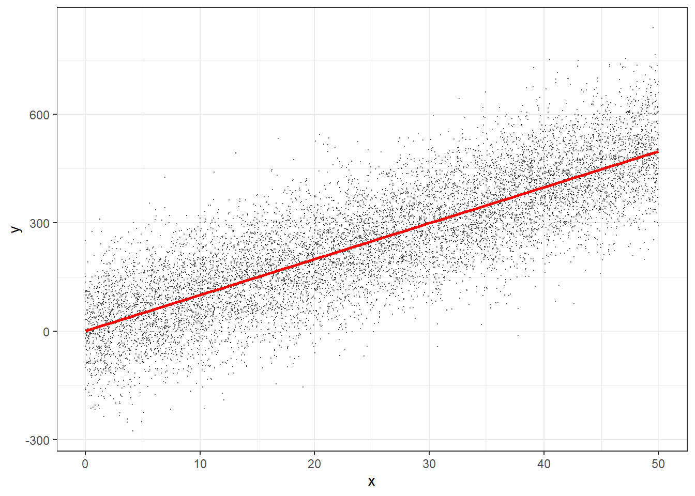
A simple linear regression model (with only 1 predictor) can be written as:
\[ Y_i = \beta_0 + \beta_1 x_i + \epsilon_i \]
In this equation:
- \(Y_i\) is the exam score for student \(i\);
- \(x_i\) is the number of study hours for student \(i\);
- \(\beta_0\) is the intercept;
- \(\beta_1\) is the slope;
- \(\epsilon_i\) is the error term, or the part of the outcome not explained by the model.
Another way to write the same model is:
\[ Y_i \sim \text{Normal}(\mu_i, \sigma) \]
with:
\[ \mu_i = \beta_0 + \beta_1 x_i \]
This version makes the distributional story clearer. For each value of study hours, exam scores vary around a mean \(\mu_i\), with spread \(\sigma\).
10.2.1 Estimating the intercept and slope
The linear regression model contains two unknown regression coefficients: \(\beta_0\) and \(\beta_1\). In practice, we estimate these from the data. The estimated values are usually written as: \(\hat{\beta}_0\) and \(\hat{\beta}_1\). The fitted regression line is then:
\[ \hat{Y}_i = \hat{\beta}_0 + \hat{\beta}_1 x_i \]
There are two closely related ways to think about how these estimates are obtained:
- ordinary least squares
- maximum likelihood estimation
For linear regression with Normal errors, these two approaches lead to the same estimated slope and intercept.
10.2.1.1 Ordinary least squares
The formulas below come from ordinary least squares, or OLS. OLS estimates the intercept and slope by choosing the line that makes the squared residuals as small as possible. A residual is the difference between an observed value and its fitted value:
\[ e_i = Y_i - \hat{Y}_i \]
OLS chooses the values of \(\hat{\beta}_0\) and \(\hat{\beta}_1\) that minimise:
\[ \sum_{i=1}^{n} e_i^2 \]
or, equivalently:
\[ \sum_{i=1}^{n}(Y_i - \hat{Y}_i)^2 \]
For simple linear regression, the OLS slope is calculated as:
\[ \hat{\beta}_1 = \frac{ \sum_{i=1}^{n}(x_i - \bar{x})(Y_i - \bar{Y}) }{ \sum_{i=1}^{n}(x_i - \bar{x})^2 } \]
The intercept is then calculated as:
\[ \hat{\beta}_0 = \bar{Y} - \hat{\beta}_1 \bar{x} \]
We do not usually calculate these values by hand, but the formulas show the basic idea. The slope is large when x and Y tend to move together. The intercept then positions the fitted line so that it passes through the point:
\[ (\bar{x}, \bar{Y}) \]
10.2.1.2 Maximum likelihood estimation
There is another way to think about the same fitted line. In the likelihood chapter, we asked which parameter values made the observed data most plausible. We can use the same idea for linear regression.
Under the Normal version of the linear regression model, we assume:
\[ Y_i \sim \text{Normal}(\mu_i, \sigma) \]
with:
\[ \mu_i = \beta_0 + \beta_1 x_i \]
This means that, for each value of x, the outcome is assumed to vary Normally around the regression line.
For one observation, the Normal density is:
\[ f(Y_i \mid \beta_0, \beta_1, \sigma) = \frac{1}{\sigma \sqrt{2\pi}} \exp \left[ - \frac{ (Y_i - \mu_i)^2 }{ 2\sigma^2 } \right] \]
Since:
\[ \mu_i = \beta_0 + \beta_1 x_i \]
we can also write this as:
\[ f(Y_i \mid \beta_0, \beta_1, \sigma) = \frac{1}{\sigma \sqrt{2\pi}} \exp \left[ - \frac{ (Y_i - \beta_0 - \beta_1 x_i)^2 }{ 2\sigma^2 } \right] \]
The likelihood for all observations is the product of these densities:
\[ L(\beta_0, \beta_1, \sigma) = \prod_{i=1}^{n} \frac{1}{\sigma \sqrt{2\pi}} \exp \left[ - \frac{ (Y_i - \beta_0 - \beta_1 x_i)^2 }{ 2\sigma^2 } \right] \]
Maximum likelihood estimation, or MLE, chooses the values of \(\beta_0\), \(\beta_1\), and \(\sigma\) that maximise this likelihood.
In practice, it is usually easier to work with the log-likelihood:
\[ \ell(\beta_0, \beta_1, \sigma) = -n\log(\sigma) - \frac{n}{2}\log(2\pi) - \frac{1}{2\sigma^2} \sum_{i=1}^{n} (Y_i - \beta_0 - \beta_1 x_i)^2 \]
The important part is the final term:
\[ \sum_{i=1}^{n} (Y_i - \beta_0 - \beta_1 x_i)^2 \]
This is the same sum of squared residuals that appeared in ordinary least squares.
For linear regression with Normal errors and constant variance, maximising the likelihood is equivalent to minimising the sum of squared residuals. Therefore, the values of \(\hat{\beta}_0\) and \(\hat{\beta}_1\) found by MLE are the same as the values found by OLS.
OLS and MLE
OLS and MLE are two ways of thinking about estimation. OLS focuses on minimising squared prediction errors. MLE focuses on maximising the likelihood of the observed data. For linear regression with Normal errors, they give the same estimates for the regression coefficients. Later models, such as Poisson regression and logistic regression, are usually estimated using maximum likelihood.
10.2.2 Fitting the model in R
Fortunately, we do not have to calculate these by hand. Modern software, such as R, is able to compute these relatively quickly.
There are many ways to construct a linear model in R. For this unit, we will use the glm() function, which has the following form:
glm(
formula = ,
data = ,
family =
)- The formula is written in the form
y ~ x, whereyis the outcome andxis the predictor. If you have multiple predictors, you can write the formula asy ~ x1 + x2 + ... + xn - The data argument is the name of the data frame containing the variables
- The family tells R what kind of model to fit. More specifically, it tells R what distributional story we want to use for the outcome. For linear regression, the outcome is continuous, so we use
family = gaussian()
For example:
linear_model <- glm(
formula = y ~ x,
data = dat,
family = gaussian()
)This tells R to fit a Gaussian regression model where y is the outcome and x is the predictor.
10.2.3 Assumptions
A model assumption is something the model treats as reasonable about the data-generating process. These assumptions are not extra details that come after the model. They are part of the model itself. For example, when we fit a linear regression model, we are not only saying:
Fit a straight line through the data.
We are also saying something more specific:
The average value of the outcome changes in a roughly straight-line way with the predictor, and the observations vary randomly around that line in a predictable way.
For linear regression, the key assumptions are often summarised as LINE:
- L: (Linearity): The average outcome changes in a roughly straight-line way as the predictor changes
- I: (Independence): The observations are not directly dependent on one another
- N: (Normal errors): The leftover variation around the fitted line is roughly Normal
- E: (Equal variance): The spread around the fitted line is roughly similar across the range of fitted values
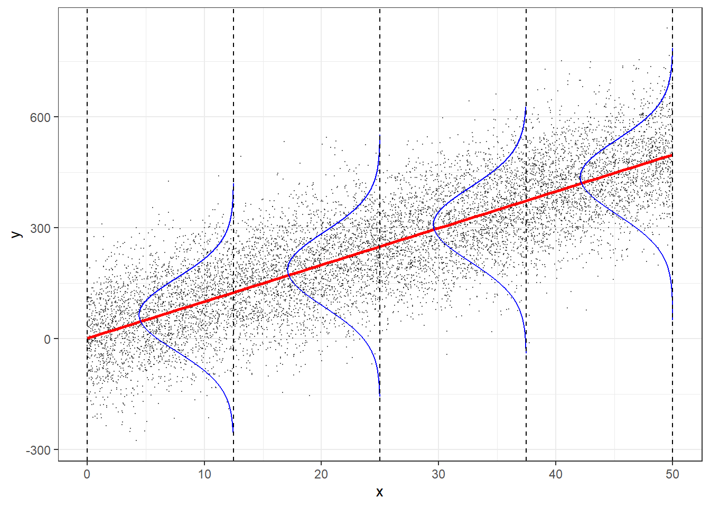
The assumptions do not need to be perfectly true. Real data are messy, and every model is a simplification. But if the assumptions are strongly violated, the model may give misleading estimates, predictions, confidence intervals, or p-values. This connects back to earlier chapters. In hypothesis testing, we asked whether an observed result would be surprising under a particular assumption. In likelihood, we asked which parameter values made the observed data plausible under a particular model. Regression works the same way. The output only makes sense in relation to the assumptions behind the model.
10.2.4 Performance
After fitting the model, we can calculate a fitted value for every observation:
\[ \hat{Y}_i \]
This is the model’s predicted outcome for observation \(i\). The difference between the observed outcome and the fitted outcome is the residual:
\[ e_i = Y_i - \hat{Y}_i \]
A model that performs well should usually have smaller residuals than a model that performs poorly. A single residual tells us how well the model performed for one observation. To judge the model overall, we need to summarise the residuals across all observations. There are several ways to do this. Some summaries give us a numerical measure of prediction error, while others use plots to show where the model is doing well and where it is struggling.
10.2.4.1 Mean absolute error
One simple measure is the mean absolute error, or MAE. The MAE calculates the average size of the residuals, ignoring whether they are positive or negative.
\[ \text{MAE} = \frac{1}{n} \sum_{i=1}^{n} |Y_i - \hat{Y}_i| \]
In words, the MAE asks:
On average, how far are the predictions from the observed values
The MAE is measured in the same units as the outcome. Suppose our outcome is exam score, the MAE is measured in exam marks. For example, if the MAE is 6, this means the model’s predictions are wrong by about 6 marks on average.
10.2.4.2 Root mean squared error
Another common measure is the root mean squared error, or RMSE. The RMSE squares each residual before averaging, and then takes the square root.
\[ \text{RMSE} = \sqrt{ \frac{1}{n} \sum_{i=1}^{n} (Y_i - \hat{Y}_i)^2 } \]
Like the MAE, the RMSE is measured in the same units as the outcome. However, RMSE gives more weight to large errors because the residuals are squared before being averaged.
This means that RMSE is often larger than MAE. If RMSE is much larger than MAE, it may suggest that the model has a few observations with very large prediction errors.
Both MAE and RMSE describe prediction error, but they emphasise different things.
| Measure | What it summarises | What to remember |
|---|---|---|
| MAE | Average absolute size of the residuals | Easier to interpret because it is a direct average error |
| RMSE | Square-root of the average squared residuals | Gives extra weight to large errors |
| Smaller value | Better predictive performance | Only when comparing models on the same outcome |
Neither measure is automatically “better”. If we want a simple average error, MAE is often easier to explain. If large errors are especially important, RMSE may be more useful.
10.2.4.3 R-squared
For linear regression, another common performance measure is R-squared, usually written as: \(R^2\).
R-squared compares the fitted model to a very simple baseline model. The baseline model ignores the predictor variables and predicts the same value for every observation:
\[ \bar{Y} \]
That is, without any x terms, the best simple prediction is just the y score.
The fitted regression model gives each observation its own prediction:
\[ \hat{Y}_i \]
R-squared asks:
How much better is the regression model than simply predicting the overall mean?
It is calculated as:
\[ R^2 = 1 - \frac{ \sum_{i=1}^{n}(Y_i - \hat{Y}_i)^2 }{ \sum_{i=1}^{n}(Y_i - \bar{Y})^2 } \]
The numerator measures the variation left over after fitting the model:
\[ \sum_{i=1}^{n}(Y_i - \hat{Y}_i)^2 \]
This is the sum of squared residuals. It measures how far the observed values are from the model’s fitted values.
The denominator measures the total variation in the outcome:
\[ \sum_{i=1}^{n}(Y_i - \bar{Y})^2 \]
This measures how far the observed values are from the overall mean.
So R-squared compares:
- the error from the fitted regression model
- the error from a simple model that only uses the mean
If the regression model makes much better predictions than the mean, then the numerator will be much smaller than the denominator, and R-squared will be closer to 1.
If the regression model is not much better than using the mean, then the numerator and denominator will be similar, and R-squared will be closer to 0.
For example, a value of:
\[ R^2 = 0.70 \]
means that the model explains about 70% of the variation in the outcome in this dataset.
R-squared is useful, but it should not be treated as the final judgement of a model. A high R-squared does not prove that the model is correct, causal, or useful for future data. A low R-squared does not always mean the model is useless, especially when the outcome is naturally noisy.
10.3 Multiple Regression
So far, we have focused on a linear regression model with one predictor:
\[ Y_i = \beta_0 + \beta_1 x_i + \epsilon_i \]
This is called simple linear regression.
However, many research questions involve more than one predictor. For example, exam scores might depend on study hours, but they may also depend on study mode, prior preparation, attendance, or access to support. If we only include one predictor, we may leave out other important information.
A multiple regression model extends the same idea by allowing more than one predictor.
For example, suppose we want to model exam_score using two predictors:
study_hours, a continuous predictorstudy_mode, a categorical predictor
The question is now:
How does average exam score change with study hours and study mode?
This is still a linear regression model because the outcome is continuous and the model describes the expected outcome as a linear combination of predictors.
10.3.1 The model
A multiple linear regression model can be written as:
\[ Y_i = \beta_0 + \beta_1 x_{1i} + \beta_2 x_{2i} + \cdots + \beta_p x_{pi} + \epsilon_i \]
In this equation:
- \(Y_i\) is the outcome for observation \(i\)
- \(x_{1i}, x_{2i}, \ldots, x_{pi}\) are the predictor values for observation \(i\)
- \(\beta_0\) is the intercept
- \(\beta_1, \beta_2, \ldots, \beta_p\) are regression coefficients
- \(\epsilon_i\) is the error term, or the part of the outcome not explained by the model
If we use two predictors, the model becomes:
\[ Y_i = \beta_0 + \beta_1 x_{1i} + \beta_2 x_{2i} + \epsilon_i \]
For example, if study_hours is continuous and study_mode has two groups, on-campus and online, we might write:
\[ \text{Exam score}_i = \beta_0 + \beta_1 \text{(study hours)}_{i} + \beta_2 \text{(study mode)}_{i} + \epsilon_i \]
Here, study_mode is an indicator variable:
\[ \text{study mode}_i = \begin{cases} 1, & \text{if student } i \text{ studies online} \\ 0, & \text{if student } i \text{ studies on campus} \end{cases} \]
This lets the model compare online and on-campus students, while also accounting for study hours.
As before, we can also write the model using the distributional form:
\[ Y_i \sim \text{Normal}(\mu_i, \sigma) \]
with:
\[ \mu_i = \beta_0 + \beta_1 x_{1i} + \beta_2 x_{2i} + \cdots + \beta_p x_{pi} \]
This version reminds us that linear regression is still a probability model. The observed outcomes vary around an expected value, and that expected value depends on the predictors.
10.3.1.1 Matrix notation
When a regression model has several predictors, the notation can become long. Matrix notation gives us a compact way to write the same model.
The multiple regression model can be written as:
\[ \mathbf{Y} = \mathbf{X}\boldsymbol{\beta} + \boldsymbol{\epsilon} \]
Here:
- \(\mathbf{Y}\) is a column of observed outcomes
- \(\mathbf{X}\) is the design matrix containing the predictors
- \(\boldsymbol{\beta}\) is a column of regression coefficients
- \(\boldsymbol{\epsilon}\) is a column of errors
For a model with an intercept and two predictors, the design matrix looks like:
\[ \mathbf{X} = \begin{bmatrix} 1 & x_{11} & x_{21} \\ 1 & x_{12} & x_{22} \\ 1 & x_{13} & x_{23} \\ \vdots & \vdots & \vdots \\ 1 & x_{1n} & x_{2n} \end{bmatrix} \]
The first column is a column of ones. This column represents the intercept.
The coefficient vector is:
\[ \boldsymbol{\beta} = \begin{bmatrix} \beta_0 \\ \beta_1 \\ \beta_2 \end{bmatrix} \]
The fitted values can then be written as:
\[ \hat{\mathbf{Y}} = \mathbf{X}\hat{\boldsymbol{\beta}} \]
This is the same model as before, just written more compactly.
10.3.1.2 OLS in matrix notation
In simple linear regression, we estimated the intercept and slope using ordinary least squares. The same idea applies in multiple regression.
OLS chooses the coefficient values that minimise the sum of squared residuals:
\[ \sum_{i=1}^{n} (Y_i - \hat{Y}_i)^2 \]
In matrix notation, the OLS estimate is:
\[ \hat{\boldsymbol{\beta}} = (\mathbf{X}^{T}\mathbf{X})^{-1} \mathbf{X}^{T}\mathbf{Y} \]
This formula is the multiple regression version of the simple slope and intercept formulas.
We do not calculate this by hand. R does it for us. But the formula is useful because it shows that the fitted coefficients depend on two things:
- the outcome values in \(\mathbf{Y}\)
- the predictor values in \(\mathbf{X}\)
10.3.1.3 Multiple regression and MLE
The likelihood idea also extends to multiple regression.
Under the Normal regression model, we assume:
\[ Y_i \sim \text{Normal}(\mu_i, \sigma) \]
with:
\[ \mu_i = \beta_0 + \beta_1 x_{1i} + \beta_2 x_{2i} + \cdots + \beta_p x_{pi} \]
The likelihood asks:
Which values of \(\beta_0, \beta_1, \ldots, \beta_p\) and \(\sigma\) make the observed data most plausible?
For multiple linear regression with Normal errors and constant variance, the OLS and MLE estimates of the regression coefficients are the same.
This is the same connection we saw before:
OLS minimises squared residuals
MLE maximises the likelihood under the Normal model
For Gaussian linear regression, these lead to the same fitted coefficients.
10.3.2 Interpreting coefficients
The main difference between simple and multiple regression is how we interpret the coefficients.
In simple linear regression, the slope describes how the expected outcome changes when the predictor increases by one unit.
In multiple regression, each coefficient describes how the expected outcome changes when that predictor changes, holding the other predictors fixed.
For example, in the model:
\[ \text{exam score}_i = \beta_0 + \beta_1 \text{study hours}_i + \beta_2 \text{online}_i + \epsilon_i \]
the coefficient \(\beta_1\) describes the expected difference in exam score for one additional hour of study, holding study mode fixed.
The coefficient \(\beta_2\) describes the expected difference between online and on-campus students, holding study hours fixed.
This phrase is important:
holding the other predictors fixed
It means that multiple regression tries to compare observations that are similar on the other variables in the model.
For example, if \(\hat{\beta}_1 = 4.2\), we would say:
Holding study mode fixed, each additional hour of study is associated with an estimated 4.2 mark increase in exam score, on average
If \(\hat{\beta}_2 = 5.0\), we would say:
Holding study hours fixed, online students are estimated to score 5 marks higher than on-campus students, on average
This does not automatically mean that study mode causes the difference. It means that this is the association estimated by the model, after accounting for study hours.
10.3.3 Additional considerations for multiple regression
Multiple regression is powerful because it allows us to include several predictors in the same model. However, adding more predictors also creates new issues that we need to think about.
In simple linear regression, we mainly worry about whether the relationship is roughly linear, whether the observations are independent, whether the residuals are roughly Normal, and whether the residual spread is roughly constant.
In multiple regression, those assumptions still matter. But we also need to check whether:
- some observations have too much influence on the fitted model
- some observations have unusual predictor values
- predictors are strongly related to each other
- extra predictors actually improve the model enough to justify the added complexity
These checks do not replace the usual assumptions. They add to them.
10.3.3.1 Leverage
Some observations have unusual predictor values. These observations are said to have high leverage.
In simple linear regression, a high-leverage point might be an observation with an unusually large or small value of x. In multiple regression, leverage is about unusual combinations of predictors.
For example, suppose most students study between 2 and 8 hours, and most online students study around 5 hours. A student who studies 20 hours and is online may have high leverage because their combination of predictor values is unusual.
Leverage is important because observations with unusual predictor values can strongly affect the fitted model.
The leverage values are written as:
\[ h_{ii} \]
The average leverage is approximately:
\[ \frac{p}{n} \]
where \(p\) is the number of estimated coefficients, including the intercept, and \(n\) is the number of observations.
A common rule of thumb is to inspect observations with leverage much larger than the average leverage. For example, some analysts look at observations where:
\[ h_{ii} > \frac{2p}{n} \]
or:
\[ h_{ii} > \frac{3p}{n} \]
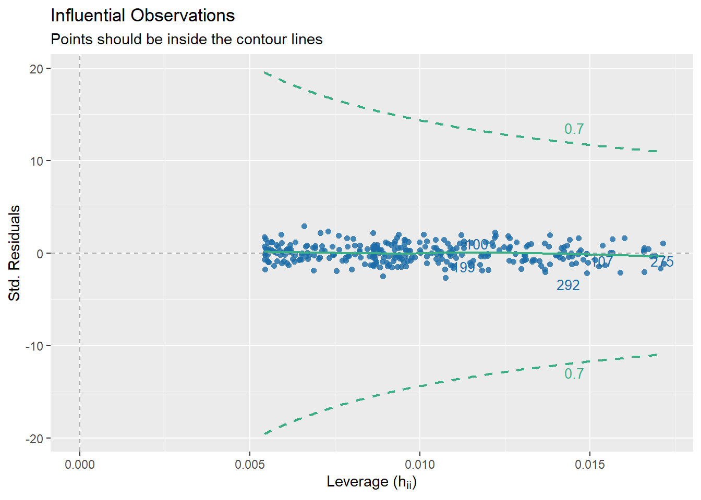
These are not strict rules. They are prompts to look more carefully. A high-leverage observation is not automatically a problem. It simply means the observation is unusual in terms of its predictors.
10.3.3.2 Influential points and Cook’s distance
A point has high leverage if it has unusual predictor values. But a high-leverage point is only especially concerning if it also affects the fitted model. An influential point is an observation that noticeably changes the fitted model.
This distinction is important:
- a point can have high leverage but still sit close to the fitted model
- a point can have a large residual but ordinary predictor values
- a point is most concerning when it has both unusual predictor values and a large residual
Influential points matter because they can make the model depend too heavily on a small number of observations. One common way to measure influence is Cook’s distance.
Cook’s distance combines information about the size of the residual and the leverage of the observation. It asks:
How much would the fitted model change if this observation were removed?
Cook’s distance for observation \(i\) is written as:
\[ D_i \]
A larger value of \(D_i\) suggests that observation \(i\) may have more influence on the fitted model.
One version of Cook’s distance is:
\[ D_i = \frac{ e_i^2 }{ p \hat{\sigma}^2 } \frac{ h_{ii} }{ (1 - h_{ii})^2 } \]
where:
- \(e_i\) is the residual for observation \(i\)
- \(h_{ii}\) is the leverage for observation \(i\)
- \(p\) is the number of estimated coefficients, including the intercept
- \(\hat{\sigma}^2\) is the estimated error variance
A common rule of thumb is to inspect observations where:
\[ D_i > \frac{4}{n} \]
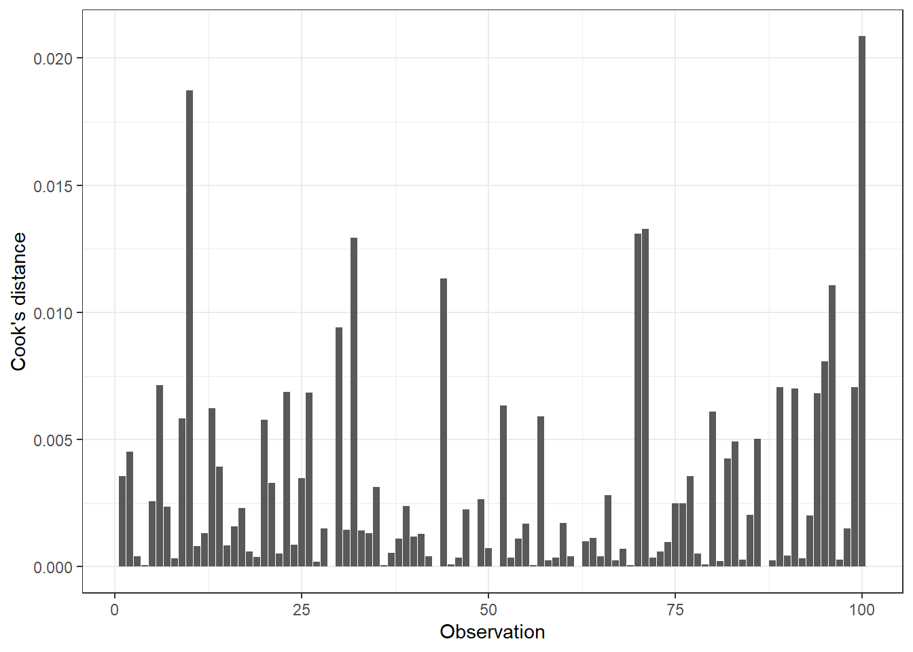
Again, this is not a strict rule. It is a signal that the observation deserves closer inspection.
Influential observations are not automatically mistakes
An influential observation should not be removed just because it affects the model.
Instead, we should ask:
- Was the value recorded correctly?
- Is this observation genuinely part of the population we want to study?
- Does the main conclusion change if the observation is removed?
- Is the model missing an important predictor or group structure?
Sometimes influential observations are data errors. Sometimes they are real and important cases. Either way, they should be investigated rather than ignored.
10.3.3.3 Multicollinearity and VIF
Multiple regression also requires us to think about relationships among the predictors.
Multicollinearity occurs when two or more predictors are strongly related to each other.
For example, suppose we model exam score using:
- study hours
- number of practice questions completed
- number of lecture videos watched
These predictors may all be measuring similar behaviour. Students who study more hours may also complete more questions and watch more videos.
When predictors are highly correlated, it becomes difficult for the model to separate their individual associations with the outcome.
Multicollinearity can lead to:
- large standard errors
- unstable coefficient estimates
- coefficients that change when other predictors are added or removed
- difficulty interpreting individual coefficients
This does not always mean the model predicts poorly. A model can have strong predictive performance even when predictors are collinear. The main issue is interpretation.
A common way to check multicollinearity is the variance inflation factor, or VIF. For predictor \(j\), the VIF is:
\[ \text{VIF}_j = \frac{1}{1 - R_j^2} \]
Here, \(R_j^2\) comes from a regression where predictor \(j\) is predicted using the other predictors.
If \(R_j^2\) is close to 0, the other predictors do not explain much of predictor \(j\), so the VIF will be close to 1.
If \(R_j^2\) is close to 1, the other predictors explain most of predictor \(j\), so the VIF will be large.
In words:
VIF measures how much the uncertainty in a coefficient has been inflated because that predictor overlaps with the other predictors
Rules of thumb vary, but a VIF above 5 or 10 is often treated as a reason to investigate further.
a <- plot(check_model(m1, panel = FALSE))
a[[5]]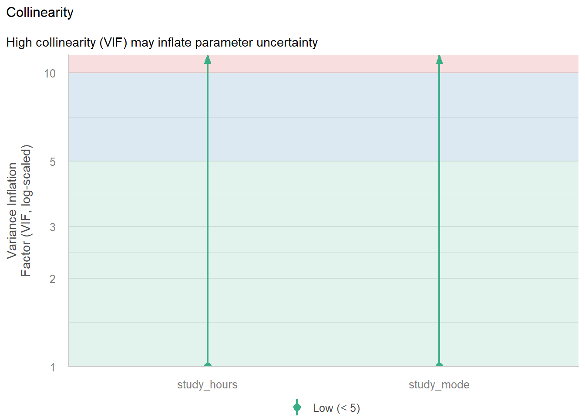
Multicollinearity affects interpretation
Multicollinearity does not necessarily mean the model is useless. If the goal is prediction, the model may still perform well. But if the goal is to interpret the separate effect of each predictor, multicollinearity can be a serious problem. When predictors overlap strongly, it becomes harder to say which predictor is responsible for the association with the outcome.
10.3.3.4 Comparing models with AIC and BIC
When we build multiple regression models, we often have several possible models.
For example:
model_1 <- glm(
exam_score ~ study_hours,
data = student_models,
family = gaussian()
)
model_2 <- glm(
exam_score ~ study_hours + study_mode,
data = student_models,
family = gaussian()
)The first model uses only study_hours. The second model uses both study_hours and study_mode.
We might ask:
Does the extra predictor improve the model enough to justify the additional complexity?
One way to compare models is to use information criteria. Two common examples are:
- Akaike Information Criterion, or AIC
- Bayesian Information Criterion, or BIC
Both are based on likelihood, which links back to the likelihood chapter. They reward models that fit the data well, but they penalise models for being more complex.
The AIC is:
\[ \text{AIC} = -2 \log(L) + 2k \]
The BIC is:
\[ \text{BIC} = -2 \log(L) + k \log(n) \]
where:
- \(L\) is the likelihood of the fitted model
- \(k\) is the number of estimated parameters
- \(n\) is the number of observations
Smaller AIC or BIC values are preferred when comparing models fitted to the same outcome and the same dataset.
We can calculate them in R using:
AIC(model_1, model_2)
BIC(model_1, model_2)AIC and BIC are especially useful when comparing several reasonable models. However, they should not be used as automatic decision rules.
AIC and BIC do not prove a model is correct
AIC and BIC can help us compare models, but they do not tell us whether a model is true.
They are most useful when comparing models that:
- use the same outcome
- are fitted to the same dataset
- are all reasonable candidates for the question being asked
A model with a lower AIC or BIC may still have poor assumptions, influential observations, or weak interpretability.
10.4 Poisson Regression
Linear regression is useful when the outcome is continuous. But not all outcomes are continuous.
Sometimes the outcome is a count. Counts are non-negative whole numbers:
\[ 0, 1, 2, 3, \ldots \]
In the student dataset, questions_attempted is a count outcome. It records how many tutorial questions each student attempted.
This means a linear regression model is not ideal. A linear regression model assumes that the outcome can vary continuously around a mean. But counts have a different structure:
- they cannot be negative
- they are whole numbers
- their variation often increases as the expected count increases
For count outcomes, a common starting point is Poisson regression.
The question we ask is:
How does the expected number of questions attempted change with study hours and study mode?
10.4.1 The Poisson distribution
The Poisson distribution is often used to model counts. A Poisson random variable can take values:
\[ 0, 1, 2, 3, \ldots \]
If \(Y_i\) is the number of questions attempted by student \(i\), we can write:
\[ Y_i \sim \text{Poisson}(\lambda_i) \]
Here, \(\lambda_i\) is the expected count for student \(i\).
In words:
\[ \lambda_i = \text{expected number of questions attempted by student } i \]
The Poisson distribution has one important feature:
\[ E(Y_i) = \lambda_i \]
and
\[ \text{Var}(Y_i) = \lambda_i \]
This means that, under a basic Poisson model, the mean and variance are assumed to be equal. We will return to this assumption later.
10.4.2 From a Poisson distribution to Poisson regression
If every student had the same expected number of questions attempted, we could use a simple Poisson model:
\[ Y_i \sim \text{Poisson}(\lambda) \]
But regression allows the expected count to change with predictors.
In Poisson regression, we allow \(\lambda_i\) to depend on variables such as study_hours and study_mode.
However, we do not model \(\lambda_i\) directly using a linear equation. This is because \(\lambda_i\) must be positive. A count can have an expected value of 1.5 or 6.8, but it cannot have an expected value below 0.
So instead of writing:
\[ \lambda_i = \beta_0 + \beta_1 x_{1i} + \beta_2 x_{2i} \]
we model the logarithm of the expected count:
\[ \log(\lambda_i) = \beta_0 + \beta_1 x_{1i} + \beta_2 x_{2i} + \cdots + \beta_p x_{pi} \]
This is called a log link. The log link is useful because the left-hand side can take any real value, while \(\lambda_i\) itself remains positive.
Equivalently, we can write:
\[ \lambda_i = e^{ \left( \beta_0 + \beta_1 x_{1i} + \beta_2 x_{2i} + \cdots + \beta_p x_{pi} \right)} \]
This second version shows why predicted counts are always positive. The exponential of any number is positive.
10.4.3 The model
For our student example, the Poisson regression model is:
\[ Y_i \sim \text{Poisson}(\lambda_i) \]
with:
\[ \log(\lambda_i) = \beta_0 + \beta_1 \text{study hours}_i + \beta_2 \text{study mode}_i \]
Here:
- \(Y_i\) is the number of questions attempted by student \(i\)
- \(\lambda_i\) is the expected number of questions attempted by student \(i\)
- \(\beta_0\) is the intercept
- \(\beta_1\) describes the association between study hours and the expected count
- \(\beta_2\) describes the association between study mode and the expected count
As before, study_mode is treated as an indicator variable. If on-campus students are the reference group, then the coefficient for online students compares online students to on-campus students, holding study hours fixed.
10.4.4 Fitting a Poisson regression model in R
The code has the same structure as before. We still use glm(), but now we change the family.
For linear regression, we used:
family = 'gaussian'For Poisson regression, we use:
family = 'poisson'The model is:
poisson_model <- glm(
questions_attempted ~ study_hours + study_mode,
data = student_models,
family = 'poisson'
)The structure is similar to the linear regression output, but the interpretation is different because the model is fitted on the log scale.
10.4.5 Interpreting coefficients
In linear regression, coefficients describe additive changes in the expected outcome. For example, a coefficient of 4 would mean the expected outcome increases by 4 units. In Poisson regression, the coefficients are on the log expected count scale. This makes direct interpretation less intuitive.
Suppose the fitted model is:
\[ \log(\lambda_i) = \beta_0 + \beta_1 x_i \]
Then \(\beta_1\) describes the expected change in the log count for a one-unit increase in \(x\).
To interpret the coefficient on the original count scale, we exponentiate it:
\[ e^{\beta_1} \]
This gives a rate ratio.
For example, if:
\[ \hat{\beta}_1 = 0.18 \]
then:
\[ e^{0.18} \approx 1.20 \]
This means that each additional hour of study is associated with an expected count that is about 1.20 times as large, holding the other predictors fixed.
In other words, each additional hour of study is associated with about a 20% increase in the expected number of questions attempted.
We can calculate exponentiated coefficients in R using:
exp(coef(poisson_model)) (Intercept) study_hours study_modeOnline
1.296238 1.216219 1.347599 A useful interpretation rule is:
- if \(e^{\hat{\beta}} = 1\), there is no change in the expected count
- if \(e^{\hat{\beta}} > 1\), the expected count is higher
- if \(e^{\hat{\beta}} < 1\), the expected count is lower
For example, if the exponentiated coefficient for study_modeOnline is 1.30, we would say:
Holding study hours fixed, online students are estimated to attempt 1.30 times as many questions as on-campus students, on average
This is the same as saying online students are estimated to attempt about 30% more questions, holding study hours fixed.
10.4.6 Estimation using maximum likelihood
Poisson regression is usually estimated using maximum likelihood.
For one observation, the Poisson probability is:
\[ P(Y_i = y_i \mid \lambda_i) = \frac{ e^{-\lambda_i}\lambda_i^{y_i} }{ y_i! } \]
In Poisson regression, \(\lambda_i\) depends on the predictors:
\[ \lambda_i = \exp \left( \beta_0 + \beta_1 x_{1i} + \beta_2 x_{2i} + \cdots + \beta_p x_{pi} \right) \]
The likelihood for all observations is the product of the individual probabilities:
\[ L(\beta_0, \beta_1, \ldots, \beta_p) = \prod_{i=1}^{n} \frac{ e^{-\lambda_i}\lambda_i^{Y_i} }{ Y_i! } \]
Maximum likelihood estimation chooses the coefficient values that make the observed counts most plausible under the Poisson regression model. Unlike Gaussian linear regression, there is no simple OLS formula for these coefficients. R estimates them using an iterative numerical procedure. This is why glm() is useful. The same function can fit linear regression, Poisson regression, and logistic regression by changing the family.
10.4.7 Assumptions
Poisson regression has its own assumptions. Some are similar to linear regression, but others are different because the outcome is a count.
The figure below compares the two model stories.
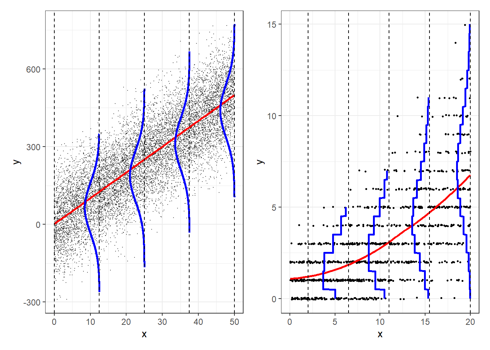
The panel on the left shows the linear regression story. The outcome is continuous, and the fitted line describes the expected value of \(Y\) for each value of \(x\). Around that line, the model assumes Normally distributed variation with roughly constant spread.
The panel on the right shows the Poisson regression story. The outcome is no longer continuous. It is a count, so the possible values are:
\[ 0, 1, 2, 3, \ldots \]
The fitted curve describes the expected count for each value of \(x\). Around that curve, the model assumes Poisson variation. This is why the vertical distributions look different from the Normal distributions in the linear regression panel. The count outcomes are discrete, cannot go below zero, and become more spread out as the expected count increases.
In a Poisson regression model, we write:
\[ Y_i \sim \text{Poisson}(\lambda_i) \]
with:
\[ \log(\lambda_i) = \beta_0 + \beta_1 x_i \]
or equivalently:
\[ \lambda_i = \exp(\beta_0 + \beta_1 x_i) \]
This is different from linear regression in two important ways.
First, Poisson regression uses a log link. The linear part of the model is on the log scale:
\[ \beta_0 + \beta_1 x_i \]
The expected count is then obtained by exponentiating this value. This ensures that the predicted expected count is always positive.
Second, Poisson regression links the mean and variance. For a Poisson model:
\[ E(Y_i) = \lambda_i \]
and:
\[ \text{Var}(Y_i) = \lambda_i \]
So as the expected count increases, the variance also increases. This is why the spread in the Poisson panel becomes wider as \(x\) increases. In contrast, the basic linear regression model assumes a constant spread around the fitted line.
The main assumptions for Poisson regression are:
- the outcome is a count
- observations are independent
- the log of the expected count changes approximately linearly with the predictors
- the variance is not much larger than the mean
- there are not more zeroes than the model can reasonably explain
The mean-variance assumption is especially important. In real data, counts often have more variation than a Poisson model expects. When the variance is larger than the mean, this is called overdispersion. Overdispersion can make standard errors too small, which can make results look more precise than they really are.
10.4.8 Performance
For Poisson regression, performance is not usually summarised using R-squared in the same way as linear regression.
Instead, we often look at:
- how close the predicted counts are to the observed counts
- whether residuals show systematic patterns
- whether there is overdispersion
- whether the model fits better than a simpler model
A simple starting point is to compare observed and predicted counts, which visually might look like:
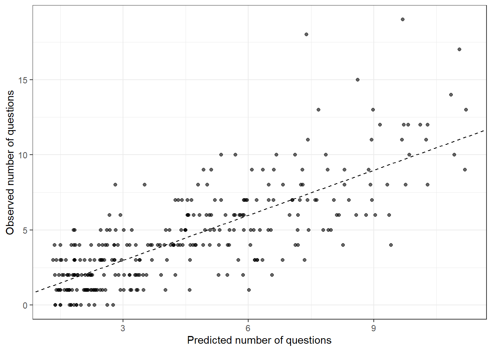
If the model fits well, the points should tend to fall around the dashed line. We do not expect a perfect fit, because the outcome is still random.
We can also calculate a mean absolute error:
student_models |>
summarise(
MAE = mean(abs(residual_questions))
)# A tibble: 1 × 1
MAE
<dbl>
1 1.58This tells us, on average, how far the predicted number of questions is from the observed number of questions.
Because this is a count outcome, the MAE is measured in questions.
10.4.9 Comparing Poisson models
As with linear regression, we can compare different models.
For example:
poisson_model_1 <- glm(
questions_attempted ~ study_hours,
data = student_models,
family = poisson()
)
poisson_model_2 <- glm(
questions_attempted ~ study_hours + study_mode,
data = student_models,
family = poisson()
)We can compare them using AIC or BIC:
AIC(poisson_model_1, poisson_model_2) df AIC
poisson_model_1 2 1254.877
poisson_model_2 3 1227.513BIC(poisson_model_1, poisson_model_2) df BIC
poisson_model_1 2 1262.285
poisson_model_2 3 1238.624Smaller values suggest a better balance between fit and complexity, as long as the models are fitted to the same outcome and dataset.
10.5 Logistic Regression
Linear regression is useful when the outcome is continuous. Poisson regression is useful when the outcome is a count. But sometimes the outcome has only two possible values.
For example, in the student dataset, submitted records whether a student submitted an assignment:
\[ 0 = \text{not submitted} \]
\[ 1 = \text{submitted} \]
This is a binary outcome. Binary outcomes are common in statistics. For example, we might record whether a person:
- voted or did not vote
- passed or failed
- recovered or did not recover
- clicked or did not click
- submitted or did not submit
For binary outcomes, a common model is logistic regression.
The question we ask is:
How does the probability of submitting change with study hours and study mode?
10.5.1 The Bernoulli distribution
A binary outcome is often modelled using a Bernoulli distribution.
If \(Y_i\) records whether student \(i\) submitted the assignment, then:
\[ Y_i \sim \text{Bernoulli}(p_i) \]
Here, \(p_i\) is the probability that student \(i\) submitted.
In words:
\[ p_i = \text{probability that student } i \text{ submitted} \]
The outcome \(Y_i\) can only take two values:
\[ Y_i = 1 \]
or:
\[ Y_i = 0 \]
where:
\[ P(Y_i = 1) = p_i \]
and:
\[ P(Y_i = 0) = 1 - p_i \]
So the model is not trying to predict a continuous outcome or a count. It is trying to model a probability.
10.5.2 From a Bernoulli distribution to logistic regression
If every student had the same probability of submitting, we could use a simple Bernoulli model:
\[ Y_i \sim \text{Bernoulli}(p) \]
But regression allows the probability to change with predictors.
For example, we might expect the probability of submitting to increase as study hours increase. We might also want to compare online and on-campus students.
However, we cannot model \(p_i\) directly using a linear equation such as:
\[ p_i = \beta_0 + \beta_1 x_{1i} + \beta_2 x_{2i} \]
This is because probabilities must stay between 0 and 1. A linear equation can produce values below 0 or above 1, which would not make sense as probabilities.
Instead, logistic regression models the log odds of the probability.
The odds of submission are:
\[ \frac{p_i}{1 - p_i} \]
The log odds are:
\[ \log \left( \frac{p_i}{1 - p_i} \right) \]
Logistic regression models the log odds as a linear combination of predictors:
\[ \log \left( \frac{p_i}{1 - p_i} \right) = \beta_0 + \beta_1 x_{1i} + \beta_2 x_{2i} + \cdots + \beta_p x_{pi} \]
This is called the logit link.
The logit link is useful because the log odds can take any real value, while the probability itself always stays between 0 and 1.
Equivalently, we can write the model on the probability scale as:
\[ p_i = \frac{ e^{\beta_0 + \beta_1 x_{1i} + \beta_2 x_{2i} + \cdots + \beta_p x_{pi}} }{ 1 + e^{\beta_0 + \beta_1 x_{1i} + \beta_2 x_{2i} + \cdots + \beta_p x_{pi}} } \]
This version shows why predicted probabilities always stay between 0 and 1.
10.5.3 The model
For our student example, the logistic regression model is:
\[ Y_i \sim \text{Bernoulli}(p_i) \]
with:
\[ \log \left( \frac{p_i}{1 - p_i} \right) = \beta_0 + \beta_1 \text{study hours}_i + \beta_2 \text{study mode}_i \]
Here:
- \(Y_i\) records whether student \(i\) submitted the assignment
- \(p_i\) is the probability that student \(i\) submitted
- \(\beta_0\) is the intercept
- \(\beta_1\) describes the association between study hours and the log odds of submission
- \(\beta_2\) describes the association between study mode and the log odds of submission
As before, study_mode is treated as an indicator variable. If on-campus students are the reference group, then the coefficient for online students compares online students to on-campus students, holding study hours fixed.
10.5.4 Fitting a logistic regression model in R
The code has the same structure as before. We still use glm(), but now we change the family.
For linear regression, we used:
family = 'gaussian'For Poisson regression, we used:
family = 'poisson'For logistic regression, we use:
family = 'binomial'The model is:
logistic_model <- glm(
submitted ~ study_hours + study_mode,
data = student_models,
family = 'binomial'
)The structure is similar to the previous models, but the interpretation is different because the model is fitted on the log odds scale.
10.5.5 Interpreting coefficients
In linear regression, coefficients describe additive changes in the expected outcome.
In Poisson regression, coefficients describe changes in the log expected count.
In logistic regression, coefficients describe changes in the log odds of the outcome.
Suppose the fitted model is:
\[ \log \left( \frac{p_i}{1 - p_i} \right) = \beta_0 + \beta_1 x_i \]
Then \(\beta_1\) describes the expected change in the log odds for a one-unit increase in \(x\).
Log odds are not easy to interpret directly. So, as with Poisson regression, we often exponentiate the coefficient:
\[ e^{\beta_1} \]
This gives an odds ratio.
For example, if:
\[ \hat{\beta}_1 = 0.55 \]
then:
\[ e^{0.55} \approx 1.73 \]
This means that each additional hour of study is associated with odds of submitting that are about 1.73 times as large, holding the other predictors fixed.
In other words, each additional hour of study is associated with higher odds of submission.
We can calculate exponentiated coefficients in R using:
exp(coef(logistic_model))A useful interpretation rule is:
- if \(e^{\hat{\beta}} = 1\), there is no change in the odds
- if \(e^{\hat{\beta}} > 1\), the odds are higher
- if \(e^{\hat{\beta}} < 1\), the odds are lower
For example, if the exponentiated coefficient for study_modeOnline is 2.00, we would say:
Holding study hours fixed, online students are estimated to have twice the odds of submitting compared with on-campus students
This is an odds interpretation, not a probability interpretation. Odds and probabilities are related, but they are not the same thing.
Odds are not probabilities
A probability compares the chance that an event happens with all possible outcomes.
An odds compares the chance that an event happens with the chance that it does not happen.
For example, if the probability of submitting is:
\[ p = 0.75 \]
then the odds of submitting are:
\[ \frac{0.75}{1 - 0.75} = 3 \]
This means the student is three times as likely to submit as not submit.
10.5.6 Estimation using maximum likelihood
Logistic regression is usually estimated using maximum likelihood.
For one observation, the Bernoulli probability is:
\[ P(Y_i = y_i \mid p_i) = p_i^{y_i} (1 - p_i)^{1 - y_i} \]
In logistic regression, \(p_i\) depends on the predictors:
\[ p_i = \frac{ e^{\beta_0 + \beta_1 x_{1i} + \beta_2 x_{2i} + \cdots + \beta_p x_{pi}} }{ 1 + e^{\beta_0 + \beta_1 x_{1i} + \beta_2 x_{2i} + \cdots + \beta_p x_{pi}} } \]
The likelihood for all observations is the product of the individual Bernoulli probabilities:
\[ L(\beta_0, \beta_1, \ldots, \beta_p) = \prod_{i=1}^{n} p_i^{Y_i} (1 - p_i)^{1 - Y_i} \]
Maximum likelihood estimation chooses the coefficient values that make the observed pattern of zeroes and ones most plausible under the logistic regression model. As with Poisson regression, there is no simple OLS formula for these coefficients. R estimates them using an iterative numerical procedure.
10.5.7 Assumptions
Logistic regression has its own assumptions. Some are similar to the earlier models, but others are different because the outcome is binary.
The figure below compares the three model stories.
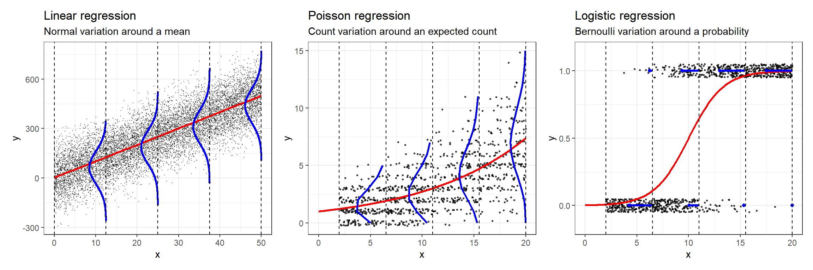
The left panel shows the linear regression story. The outcome is continuous, and the model assumes Normal variation around a mean. The middle panel shows the Poisson regression story. The outcome is a count, and the model assumes Poisson variation around an expected count. The spread increases as the expected count increases.
The right panel shows the logistic regression story. The outcome is binary, so the observed values can only be 0 or 1. The red curve shows the fitted probability of the outcome being 1.
In a logistic regression model, we write:
\[ Y_i \sim \text{Bernoulli}(p_i) \]
with:
\[ \log \left( \frac{p_i}{1 - p_i} \right) = \beta_0 + \beta_1 x_i \]
or equivalently:
\[ p_i = \frac{ e^{\beta_0 + \beta_1 x_i} }{ 1 + e^{\beta_0 + \beta_1 x_i} } \]
This differs from the previous models in two important ways.
First, logistic regression models a probability. The fitted curve is therefore bounded between 0 and 1.
Second, the variation around the fitted probability is Bernoulli variation. At each value of \(x\), the outcome is still only 0 or 1. The model changes the probability of seeing a 1.
The main assumptions for logistic regression are:
- the outcome is binary
- observations are independent
- the log odds of the outcome change approximately linearly with the predictors
- there are no extreme influential observations driving the fitted model
- there is no serious multicollinearity among predictors
- the data contain enough zeroes and ones across the predictor range to estimate the model
The third assumption is especially important. Logistic regression does not assume that the probability changes linearly with \(x\). Instead, it assumes that the log odds change linearly with \(x\).
Linear, Poisson, and logistic regression
The three models share the same basic regression idea, but they use different distributional stories.
| Feature | Linear regression | Poisson regression | Logistic regression |
|---|---|---|---|
| Outcome type | Continuous | Count | Binary |
| Distribution | Normal | Poisson | Bernoulli |
| Modelled quantity | Mean | Expected count | Probability |
| Link function | Identity | Log | Logit |
| Fitted value | \(\mu_i\) | \(\lambda_i\) | \(p_i\) |
| Range of fitted values | Any real number | Positive values | Between 0 and 1 |
| Common use | Measurements | Counts | Yes/no outcomes |
The key point is that logistic regression is not linear regression applied to zeroes and ones. It uses a different distributional story that respects the binary structure of the outcome.
10.5.8 Performance
For logistic regression, performance is usually assessed differently from linear regression. The model produces predicted probabilities, not direct yes/no classifications.
For example, the model might predict \(p_i = 0.82\) for one student and \(p_i = 0.25\) for another student.
These are probabilities. To turn them into predicted classes, we need to choose a threshold.
A common threshold is 0.5:
- if \(\hat{p}_i \geq 0.5\), predict submitted
- if \(\hat{p}_i < 0.5\), predict not submitted
We can add predicted probabilities and predicted classes to the dataset:
student_models <- student_models |>
mutate(
predicted_submission_probability = predict(
logistic_model,
type = "response"
),
predicted_submission = if_else(
predicted_submission_probability >= 0.5,
1,
0
))A simple way to evaluate the model is to compare observed and predicted classes.
table(
predictions = student_models$predicted_submission,
actual = student_models$submitted
) actual
predictions 0 1
0 107 32
1 31 130This table compares the actual outcome with the predicted outcome. It is often called a confusion matrix. There are various different metrics we can compute with the confusion matrix, such as accuracy, sensitivity, specificity, and precision.
To define these, it helps to give names to the four cells of the confusion matrix.
| Term | Meaning |
|---|---|
| True positive | The model predicted submitted, and the student did submit |
| False positive | The model predicted submitted, but the student did not submit |
| True negative | The model predicted not submitted, and the student did not submit |
| False negative | The model predicted not submitted, but the student did submit |
The most familiar measure is accuracy. Accuracy is the proportion of predictions that were correct:
\[ \text{Accuracy} = \frac{ \text{true positives} + \text{true negatives} }{ \text{total number of observations} } \]
Accuracy is useful, but it is not always enough. Suppose most students submit the assignment. A model that predicts “submitted” for everyone might have high accuracy, even if it is not very good at identifying students who do not submit.
Another useful measure is sensitivity. Sensitivity asks:
Of the students who actually submitted, what proportion did the model correctly predict as submitted?
\[ \text{Sensitivity} = \frac{ \text{true positives} }{ \text{true positives} + \text{false negatives} } \]
A related measure is specificity. Specificity asks:
Of the students who did not submit, what proportion did the model correctly predict as not submitted?
\[ \text{Specificity} = \frac{ \text{true negatives} }{ \text{true negatives} + \text{false positives} } \]
Another common measure is precision. Precision asks:
Of the students predicted to submit, what proportion actually submitted?
\[ \text{Precision} = \frac{ \text{true positives} }{ \text{true positives} + \text{false positives} } \]
These measures focus on different kinds of model performance. Which one matters most depends on the purpose of the model.
For example, if we are trying to identify students who may need support, sensitivity might be especially important. A model with low sensitivity might miss many students who are at risk. If we are trying to avoid incorrectly flagging students, specificity or precision might matter more.
The threshold matters
The predicted probabilities from logistic regression are not automatically yes/no predictions. We created predicted classes using a threshold of 0.5:
\[ \hat{p}_i \geq 0.5 \]
Changing this threshold changes the confusion matrix. For example, a lower threshold will usually predict more students as submitted. A higher threshold will usually predict fewer students as submitted. This means accuracy, sensitivity, specificity, and precision all depend on the threshold we choose.
Another useful plot compares predicted probabilities with the observed outcomes:
ggplot(student_models, aes(x = predicted_submission_probability, y = submitted)) +
geom_jitter(height = 0.05, width = 0, alpha = 0.5) +
labs(
x = "Predicted probability of submitting",
y = "Observed submission outcome"
) +
theme_bw()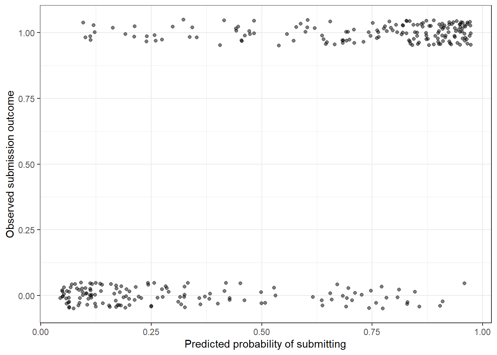
If the model is useful, students with high predicted probabilities should be more likely to have submitted than students with low predicted probabilities.
10.5.9 Comparing logistic models
As with the other models, we can compare different logistic regression models.
For example:
logistic_model_1 <- glm(
submitted ~ study_hours,
data = student_models,
family = binomial()
)
logistic_model_2 <- glm(
submitted ~ study_hours + study_mode,
data = student_models,
family = binomial()
)We can compare them using AIC or BIC:
AIC(logistic_model_1, logistic_model_2) df AIC
logistic_model_1 2 279.3066
logistic_model_2 3 273.2480BIC(logistic_model_1, logistic_model_2) df BIC
logistic_model_1 2 286.7142
logistic_model_2 3 284.3593Smaller values suggest a better balance between fit and complexity, as long as the models are fitted to the same outcome and dataset.
10.6 A full example
In this section, we work through a full modelling example using the Student Performance Dataset. The dataset contains 10,000 student records and is designed to examine factors associated with academic performance.
Each row represents one student. The variables are:
Hours Studied: total number of hours spent studyingPrevious Scores: scores obtained in previous testsExtracurricular Activities: whether the student participates in extracurricular activitiesSleep Hours: average hours of sleep per daySample Question Papers Practiced: number of sample question papers practisedPerformance Index: overall academic performance score, ranging from 10 to 100
The outcome variable is Performance Index. Since this is a numerical outcome, we will use linear regression.
Our aim is to build, compare, and evaluate three multiple regression models. Each model will use three predictors.
10.6.1 Loading and preparing the data
First, we load the dataset.
student_performance <- read_csv("data/Student_Performance.csv")Rows: 10000 Columns: 6
── Column specification ────────────────────────────────────────────────────────
Delimiter: ","
chr (1): Extracurricular Activities
dbl (5): Hours Studied, Previous Scores, Sleep Hours, Sample Question Papers...
ℹ Use `spec()` to retrieve the full column specification for this data.
ℹ Specify the column types or set `show_col_types = FALSE` to quiet this message.The variable names contain spaces, which can make modelling code harder to read. We will rename the variables using shorter names.
student_performance <- student_performance |>
rename(
hours_studied = `Hours Studied`,
previous_scores = `Previous Scores`,
extracurricular = `Extracurricular Activities`,
sleep_hours = `Sleep Hours`,
practice_papers = `Sample Question Papers Practiced`,
performance_index = `Performance Index`
) |>
mutate(
extracurricular = factor(extracurricular)
)Now we inspect the first few rows.
student_performance |>
slice_head(n = 10)# A tibble: 10 × 6
hours_studied previous_scores extracurricular sleep_hours practice_papers
<dbl> <dbl> <fct> <dbl> <dbl>
1 7 99 Yes 9 1
2 4 82 No 4 2
3 8 51 Yes 7 2
4 5 52 Yes 5 2
5 7 75 No 8 5
6 3 78 No 9 6
7 7 73 Yes 5 6
8 8 45 Yes 4 6
9 5 77 No 8 2
10 4 89 No 4 0
# ℹ 1 more variable: performance_index <dbl>We can also summarise the numerical variables.
student_performance |>
summarise(
n = n(),
mean_hours_studied = mean(hours_studied),
mean_previous_scores = mean(previous_scores),
mean_sleep_hours = mean(sleep_hours),
mean_practice_papers = mean(practice_papers),
mean_performance_index = mean(performance_index)
) |>
gt() |>
fmt_number(
columns = everything(),
decimals = 2
)| n | mean_hours_studied | mean_previous_scores | mean_sleep_hours | mean_practice_papers | mean_performance_index |
|---|---|---|---|---|---|
| 10,000.00 | 4.99 | 69.45 | 6.53 | 4.58 | 55.22 |
The mean of performance_index tells us the average performance score in the dataset. The other summaries give us a quick sense of the predictors.
10.6.2 Visualising the outcome
Before fitting any models, we should look at the outcome variable.
ggplot(student_performance, aes(x = performance_index)) +
geom_histogram(bins = 30) +
labs(
x = "Performance index",
y = "Number of students"
) +
theme_bw()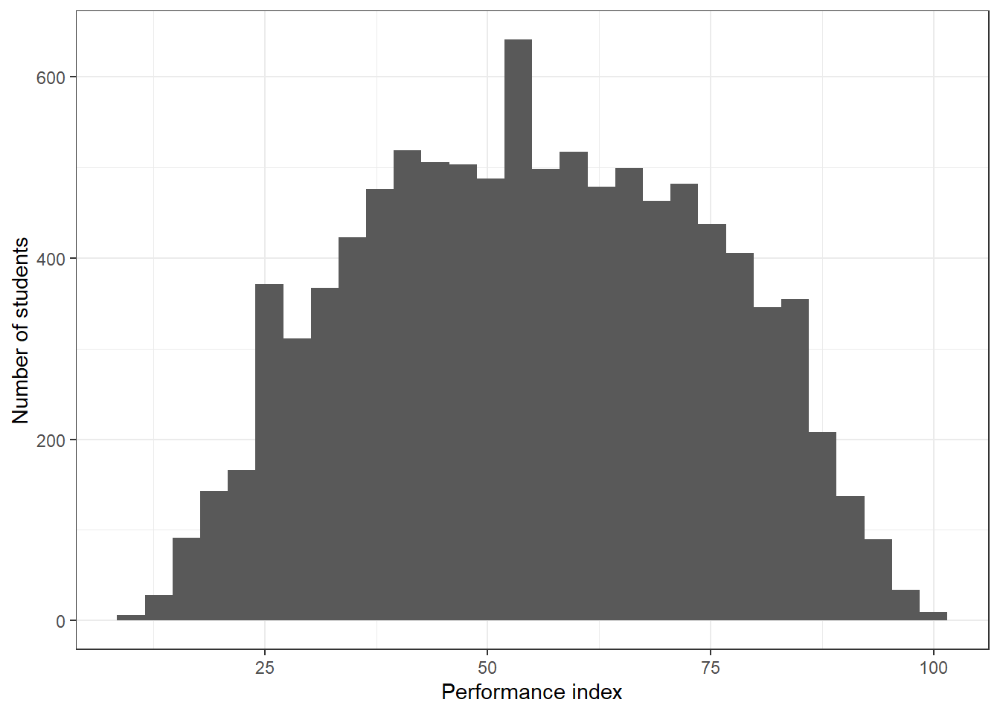
This shows the distribution of student performance scores.
Since performance_index is numerical, a linear regression model is a reasonable starting point.
10.6.3 Visualising relationships with predictors
Next, we will visualise some relationships
library(GGally)
student_performance |>
select(performance_index, everything()) |>
ggpairs()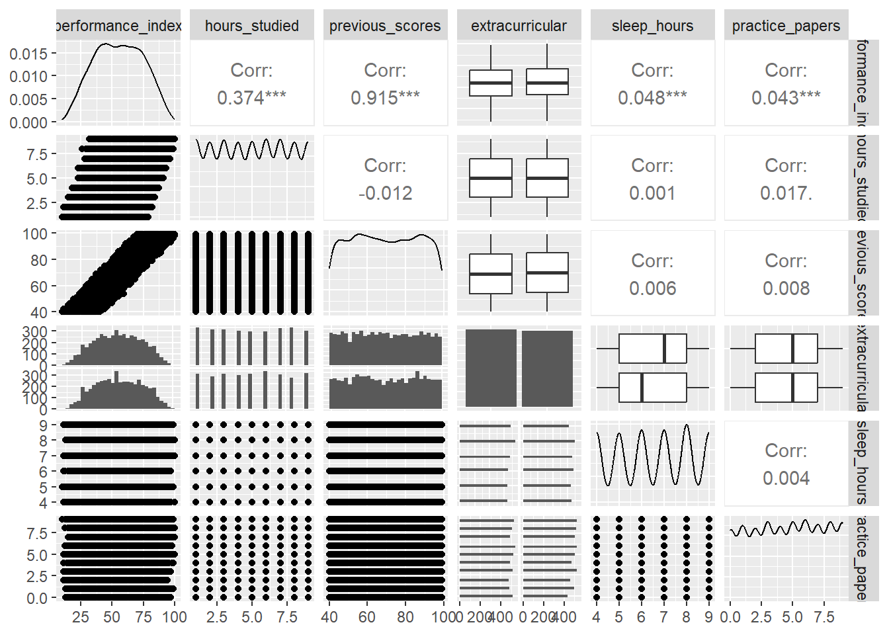
These plots help us see which predictors appear to have strong relationships with performance before fitting the models.
10.6.4 Splitting into training and testing data
To compare models fairly, we will split the data into a training set and a testing set.
The training set is used to fit the models. The testing set is used to evaluate how well the fitted models perform on data that were not used during estimation.
library(rsample)Warning: package 'rsample' was built under R version 4.5.3set.seed(2420)
split <- initial_split(student_performance)
train_data <- training(split)
test_data <- testing(split)10.6.5 Building three multiple regression models
We will fit three multiple regression models. Each model uses three predictors.
Model 1 focuses on academic effort and preparation:
model_1 <- glm(
performance_index ~ hours_studied + previous_scores + practice_papers,
data = train_data,
family = 'gaussian'
)Model 2 focuses on routine and activity:
model_2 <- glm(
performance_index ~ hours_studied + sleep_hours + extracurricular,
data = train_data,
family = 'gaussian'
)Model 3 combines previous achievement with lifestyle variables:
model_3 <- glm(
performance_index ~ previous_scores + sleep_hours + extracurricular,
data = train_data,
family = 'gaussian'
)All three models are multiple regression models because each includes more than one predictor.
10.6.6 Inspecting model output
We can inspect each model using summary().
summary(model_1)
Call:
glm(formula = performance_index ~ hours_studied + previous_scores +
practice_papers, family = "gaussian", data = train_data)
Coefficients:
Estimate Std. Error t value Pr(>|t|)
(Intercept) -30.688990 0.123419 -248.66 <2e-16 ***
hours_studied 2.854410 0.009847 289.86 <2e-16 ***
previous_scores 1.019237 0.001473 692.11 <2e-16 ***
practice_papers 0.194893 0.008834 22.06 <2e-16 ***
---
Signif. codes: 0 '***' 0.001 '**' 0.01 '*' 0.05 '.' 0.1 ' ' 1
(Dispersion parameter for gaussian family taken to be 4.852593)
Null deviance: 2745828 on 7499 degrees of freedom
Residual deviance: 36375 on 7496 degrees of freedom
AIC: 33136
Number of Fisher Scoring iterations: 2summary(model_2)
Call:
glm(formula = performance_index ~ hours_studied + sleep_hours +
extracurricular, family = "gaussian", data = train_data)
Coefficients:
Estimate Std. Error t value Pr(>|t|)
(Intercept) 37.03918 0.93042 39.809 < 2e-16 ***
hours_studied 2.76570 0.07917 34.932 < 2e-16 ***
sleep_hours 0.57476 0.12048 4.771 1.87e-06 ***
extracurricularYes 1.15417 0.40927 2.820 0.00481 **
---
Signif. codes: 0 '***' 0.001 '**' 0.01 '*' 0.05 '.' 0.1 ' ' 1
(Dispersion parameter for gaussian family taken to be 313.9273)
Null deviance: 2745828 on 7499 degrees of freedom
Residual deviance: 2353199 on 7496 degrees of freedom
AIC: 64409
Number of Fisher Scoring iterations: 2summary(model_3)
Call:
glm(formula = performance_index ~ previous_scores + sleep_hours +
extracurricular, family = "gaussian", data = train_data)
Coefficients:
Estimate Std. Error t value Pr(>|t|)
(Intercept) -18.499470 0.507039 -36.485 < 2e-16 ***
previous_scores 1.012544 0.005136 197.134 < 2e-16 ***
sleep_hours 0.477270 0.052242 9.136 < 2e-16 ***
extracurricularYes 0.699804 0.177482 3.943 8.12e-05 ***
---
Signif. codes: 0 '***' 0.001 '**' 0.01 '*' 0.05 '.' 0.1 ' ' 1
(Dispersion parameter for gaussian family taken to be 59.02504)
Null deviance: 2745828 on 7499 degrees of freedom
Residual deviance: 442452 on 7496 degrees of freedom
AIC: 51875
Number of Fisher Scoring iterations: 2The coefficient estimates describe how the expected performance index changes with each predictor, holding the other predictors in the model fixed. For example, in Model 1, the coefficient for hours_studied describes the expected change in performance index for one additional hour studied, holding previous scores and practice papers fixed.
10.6.7 Comparing models using AIC and BIC
AIC and BIC compare models by balancing model fit and complexity.
AIC(model_1, model_2, model_3) df AIC
model_1 5 33136.43
model_2 5 64408.79
model_3 5 51874.79BIC(model_1, model_2, model_3) df BIC
model_1 5 33171.04
model_2 5 64443.40
model_3 5 51909.40Smaller AIC or BIC values are preferred when comparing models fitted to the same outcome and the same training dataset. However, AIC and BIC only use the training data. We should also compare the models on the testing data.
10.6.8 Creating predictions on the testing data
We now use each fitted model to predict performance_index for the testing data.
test_predictions <- test_data |>
mutate(
pred_model_1 = predict(
model_1,
newdata = test_data,
type = "response"
),
pred_model_2 = predict(
model_2,
newdata = test_data,
type = "response"
),
pred_model_3 = predict(
model_3,
newdata = test_data,
type = "response"
)
)The predictions are on the original performance index scale.
10.6.9 Comparing observed and predicted values
A useful visual check is to compare observed values with predicted values.
ggplot(test_predictions, aes(x = pred_model_1, y = performance_index)) +
geom_point(alpha = 0.3) +
geom_abline(
intercept = 0,
slope = 1,
linetype = "dashed"
) +
labs(
x = "Predicted performance index",
y = "Observed performance index",
title = "Model 1"
) +
theme_bw()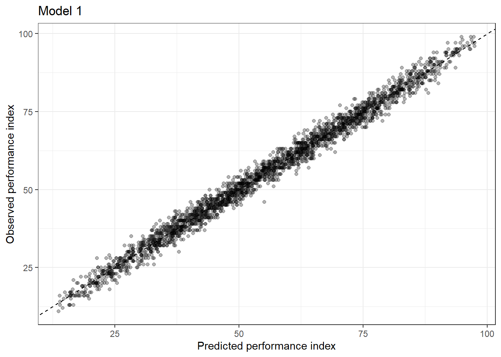
ggplot(test_predictions, aes(x = pred_model_2, y = performance_index)) +
geom_point(alpha = 0.3) +
geom_abline(
intercept = 0,
slope = 1,
linetype = "dashed"
) +
labs(
x = "Predicted performance index",
y = "Observed performance index",
title = "Model 2"
) +
theme_bw()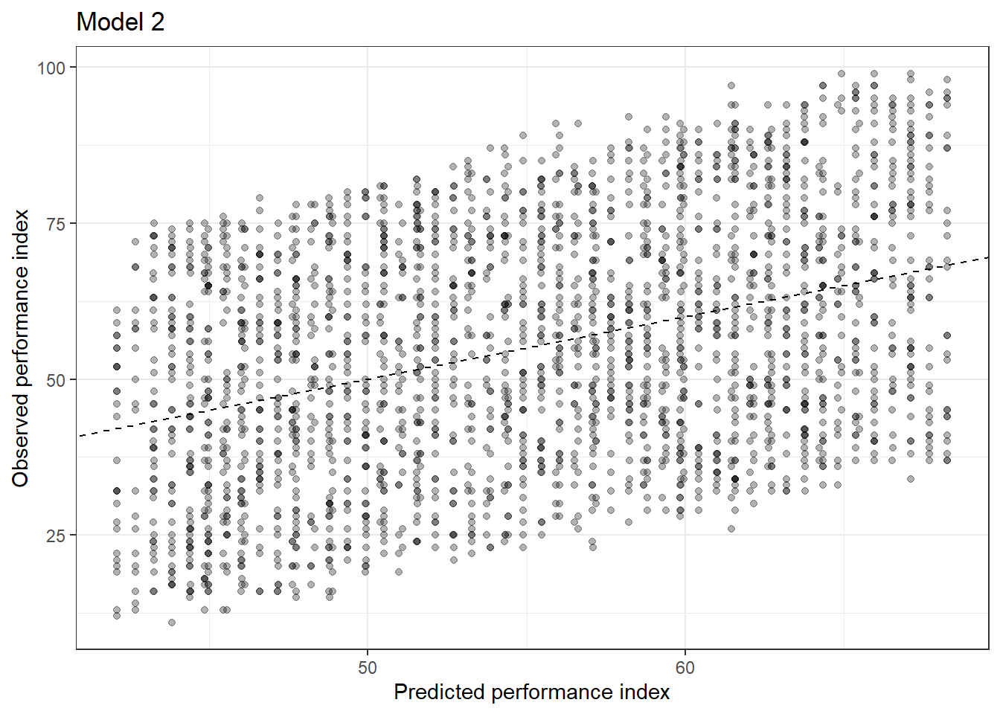
ggplot(test_predictions, aes(x = pred_model_3, y = performance_index)) +
geom_point(alpha = 0.3) +
geom_abline(
intercept = 0,
slope = 1,
linetype = "dashed"
) +
labs(
x = "Predicted performance index",
y = "Observed performance index",
title = "Model 3"
) +
theme_bw()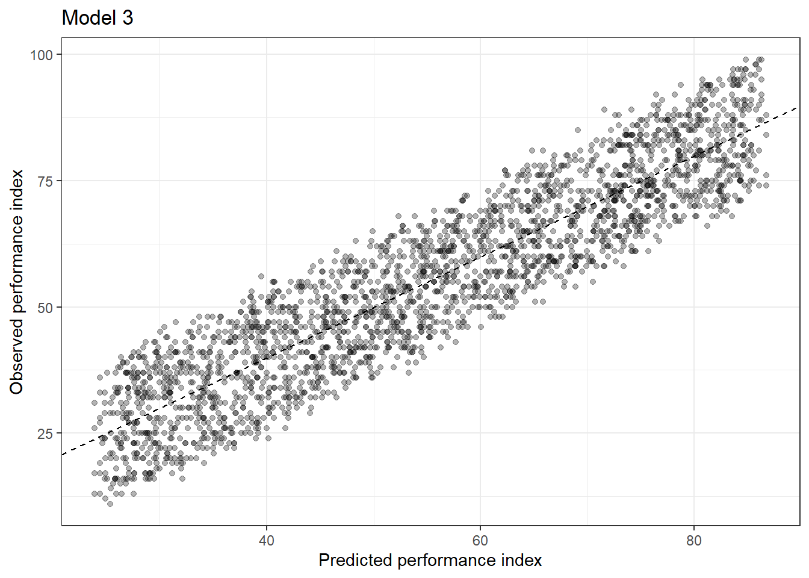
The dashed line represents perfect prediction. A model with better predictions should have points closer to this line.
10.6.10 Comparing test performance
We can compare the models using mean absolute error and root mean squared error.
model_performance <- tibble(
model = c("Model 1", "Model 2", "Model 3"),
MAE = c(
mean(abs(test_predictions$performance_index - test_predictions$pred_model_1)),
mean(abs(test_predictions$performance_index - test_predictions$pred_model_2)),
mean(abs(test_predictions$performance_index - test_predictions$pred_model_3))
),
RMSE = c(
sqrt(mean((test_predictions$performance_index - test_predictions$pred_model_1)^2)),
sqrt(mean((test_predictions$performance_index - test_predictions$pred_model_2)^2)),
sqrt(mean((test_predictions$performance_index - test_predictions$pred_model_3)^2))
)
)
model_performance |>
gt() |>
fmt_number(
columns = c(MAE, RMSE),
decimals = 2
)| model | MAE | RMSE |
|---|---|---|
| Model 1 | 1.78 | 2.25 |
| Model 2 | 15.58 | 18.02 |
| Model 3 | 6.63 | 7.73 |
The model with the smallest MAE and RMSE has the best predictive performance on the testing data. MAE is easier to interpret because it is the average absolute prediction error, measured in performance index points. RMSE gives more weight to large prediction errors.
10.6.11 Checking assumptions
Since these are linear regression models, we should check the usual linear regression assumptions.
These include:
- linearity
- independence
- approximately Normal residuals
- roughly constant residual spread
- no extreme influential observations
We can use diagnostic plots for each model.
performance::check_model(model_1)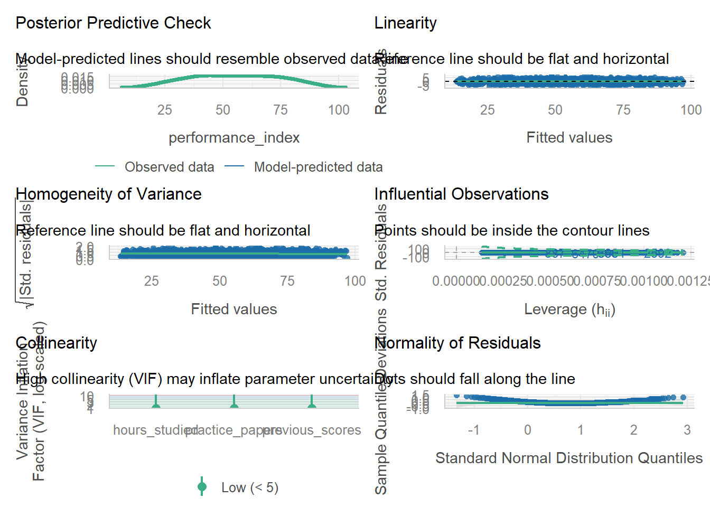
performance::check_model(model_2)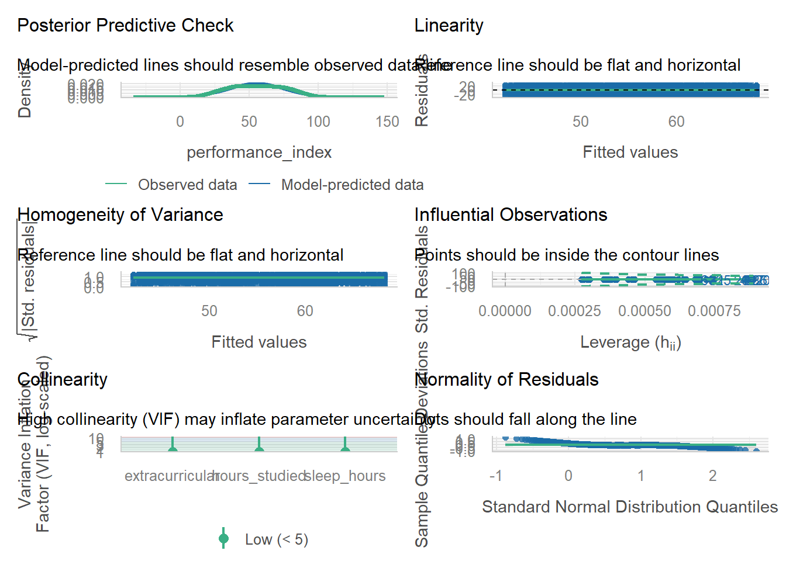
performance::check_model(model_3)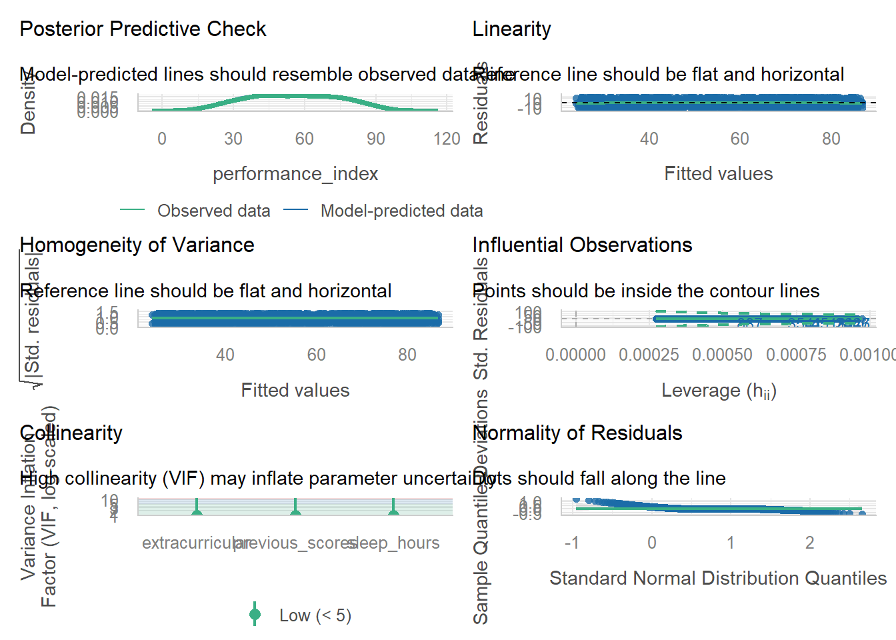
These plots help us assess whether the models are reasonable. They are not automatic pass/fail tests, but they help us identify potential problems.
10.6.12 Checking residuals manually
We can also create residual plots ourselves.
train_diagnostics <- train_data |>
mutate(
fitted_model_1 = predict(model_1, type = "response"),
residual_model_1 = performance_index - fitted_model_1
)A residuals-versus-fitted plot helps us check whether the residuals have a clear pattern.
ggplot(train_diagnostics, aes(x = fitted_model_1, y = residual_model_1)) +
geom_point(alpha = 0.3) +
geom_hline(
yintercept = 0,
linetype = "dashed"
) +
labs(
x = "Fitted values",
y = "Residuals"
) +
theme_bw()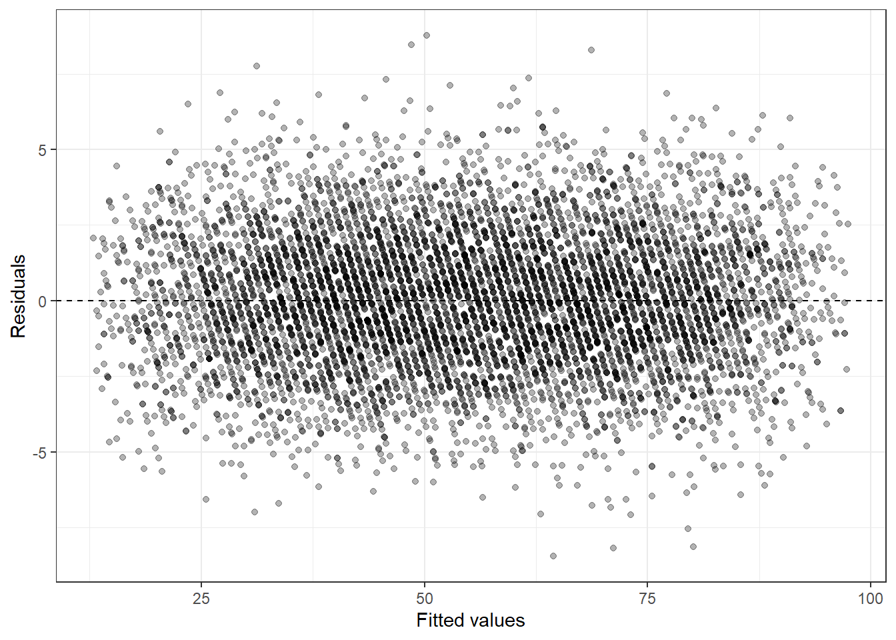
A histogram of residuals helps us check whether the residuals are roughly symmetric.
ggplot(train_diagnostics, aes(x = residual_model_1)) +
geom_histogram(bins = 30) +
labs(
x = "Residuals",
y = "Number of students"
) +
theme_bw()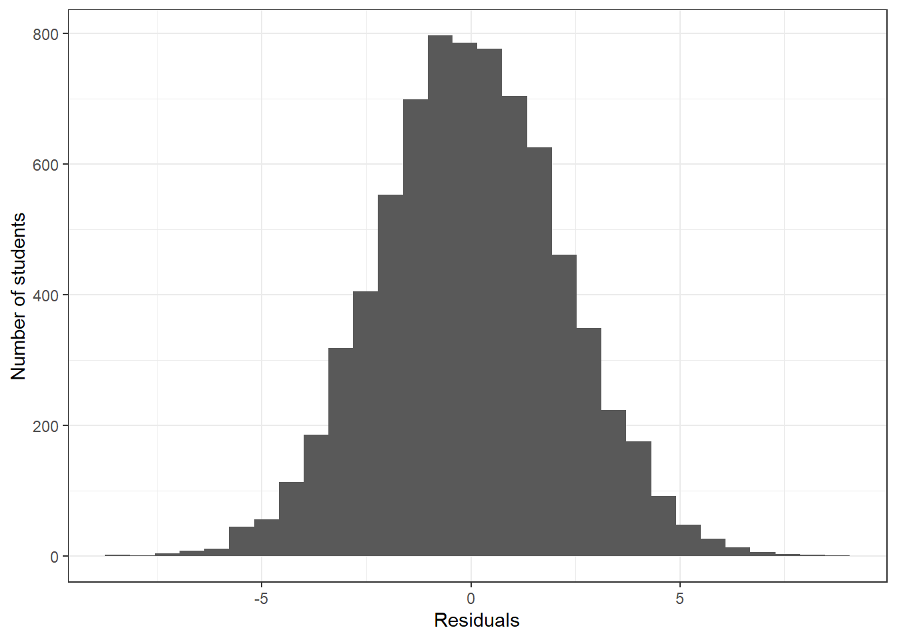
A QQ plot is another way to check whether the residuals are approximately Normal.
ggplot(train_diagnostics, aes(sample = residual_model_1)) +
stat_qq() +
stat_qq_line() +
labs(
x = "Theoretical quantiles",
y = "Sample quantiles"
) +
theme_bw()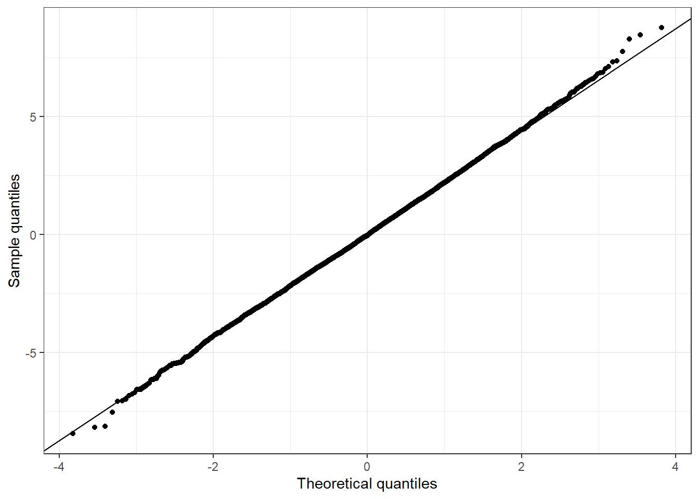
10.6.13 Checking multicollinearity
Because each model has multiple predictors, we should also check whether predictors overlap too strongly.
performance::check_collinearity(model_1)# Check for Multicollinearity
Low Correlation
Term VIF VIF 95% CI adj. VIF Tolerance Tolerance 95% CI
hours_studied 1.00 [1.00, 2.22e+09] 1.00 1.00 [0.00, 1.00]
previous_scores 1.00 [1.00, Inf] 1.00 1.00 [0.00, 1.00]
practice_papers 1.00 [1.00, 6.16e+12] 1.00 1.00 [0.00, 1.00]performance::check_collinearity(model_2)# Check for Multicollinearity
Low Correlation
Term VIF VIF 95% CI adj. VIF Tolerance Tolerance 95% CI
hours_studied 1.00 [1.00, Inf] 1.00 1.00 [0.00, 1.00]
sleep_hours 1.00 [1.00, Inf] 1.00 1.00 [0.00, 1.00]
extracurricular 1.00 [1.00, Inf] 1.00 1.00 [0.00, 1.00]performance::check_collinearity(model_3)# Check for Multicollinearity
Low Correlation
Term VIF VIF 95% CI adj. VIF Tolerance Tolerance 95% CI
previous_scores 1.00 [1.00, Inf] 1.00 1.00 [0.00, 1.00]
sleep_hours 1.00 [1.00, Inf] 1.00 1.00 [0.00, 1.00]
extracurricular 1.00 [1.00, 1.13e+15] 1.00 1.00 [0.00, 1.00]High collinearity can make individual coefficients harder to interpret, because the model struggles to separate the unique contribution of each predictor.
10.6.14 Choosing a model
At this point, we have several pieces of evidence:
- the visual relationships
- the coefficient estimates
- AIC and BIC
- test-set MAE and RMSE
- diagnostic plots
- collinearity checks
A good model is not chosen from just one number. A model should predict reasonably well, satisfy assumptions well enough, and answer the research question.
For example, if Model 1 has the lowest test RMSE and reasonable diagnostics, we might prefer it because it includes study hours, previous scores, and practice papers. These predictors are also directly related to academic preparation.
If another model has similar predictive performance but is easier to explain, that may also be a good choice.
Modelling is a workflow
A full regression analysis is not just:
glm(y ~ x, data = data)A full workflow includes:
- understanding the data
- visualising the variables
- fitting candidate models
- comparing models
- checking assumptions
- evaluating performance on testing data
- interpreting the results in context
The final model should be statistically reasonable and meaningful for the question being asked.
10.7 Summary
In this chapter, we introduced three common regression models: linear regression, Poisson regression, and logistic regression. All three models are used to describe how an outcome changes with one or more predictors. The main difference is the type of outcome being modelled.
| Model | Outcome type | Example outcome | Distribution | Modelled quantity | Link function |
|---|---|---|---|---|---|
| Linear regression | Continuous | exam_score | Normal | Mean | Identity |
| Poisson regression | Count | questions_attempted | Poisson | Expected count | Log |
| Logistic regression | Binary | submitted | Bernoulli | Probability | Logit |
The linear regression model is used when the outcome is continuous:
\[ Y_i \sim \text{Normal}(\mu_i, \sigma) \]
with:
\[ \mu_i = \beta_0 + \beta_1 x_{1i} + \cdots + \beta_p x_{pi} \]
The Poisson regression model is used when the outcome is a count:
\[ Y_i \sim \text{Poisson}(\lambda_i) \]
with:
\[ \log(\lambda_i) = \beta_0 + \beta_1 x_{1i} + \cdots + \beta_p x_{pi} \]
The logistic regression model is used when the outcome is binary:
\[ Y_i \sim \text{Bernoulli}(p_i) \]
with:
\[ \log \left( \frac{p_i}{1 - p_i} \right) = \beta_0 + \beta_1 x_{1i} + \cdots + \beta_p x_{pi} \]
The code structure is also similar across the three models. In R, we can fit all three using glm() and changing the family argument:
glm(y ~ x1 + x2, data = data, family = gaussian())
glm(y ~ x1 + x2, data = data, family = poisson())
glm(y ~ x1 + x2, data = data, family = binomial())The important point is that the model should match the outcome.
- Use linear regression when the outcome is continuous.
- Use Poisson regression when the outcome is a count.
- Use logistic regression when the outcome is binary.
Although these models look different, they share the same modelling idea:
The predictors describe the systematic pattern, and the distribution describes the random variation around that pattern.
A good regression analysis does not stop at fitting the model. We also need to interpret the coefficients carefully, check the assumptions, assess model performance, and connect the results back to the original research question.
10.8 Exercises
Question 1
A researcher wants to model each of the following outcomes:
- a student’s final exam score out of 100
- the number of tutorial questions a student attempts
- whether a student submits an assignment on time
For each outcome, identify an appropriate regression model from this chapter: linear regression, Poisson regression, or logistic regression. Briefly explain your choice.
Click for Solutions
A final exam score is numerical and approximately continuous, so a linear regression model is appropriate.
The number of tutorial questions attempted is a count, so a Poisson regression model is a possible starting point.
Whether a student submits an assignment on time is a yes/no outcome, so a logistic regression model is appropriate.
Question 2
Explain the difference between the following two models:
\[ Y_i \sim \text{Normal}(\mu_i, \sigma) \]
with:
\[ \mu_i = \beta_0 + \beta_1 x_i \]
and:
\[ Y_i \sim \text{Poisson}(\lambda_i) \]
with:
\[ \log(\lambda_i) = \beta_0 + \beta_1 x_i \]
In your answer, refer to the type of outcome, the modelled quantity, and the link function.
Click for Solutions
The first model is a linear regression model. It is used for a continuous outcome. It models the mean of the outcome, \(\mu_i\), directly as a linear function of the predictor. This uses the identity link.
The second model is a Poisson regression model. It is used for a count outcome. It models the log of the expected count, \(\log(\lambda_i)\), as a linear function of the predictor. This uses the log link.
The key difference is that linear regression models a continuous outcome directly, while Poisson regression models a count outcome through the log of its expected value.
Question 3
Suppose a logistic regression model is written as:
\[ Y_i \sim \text{Bernoulli}(p_i) \]
with:
\[ \log \left( \frac{p_i}{1 - p_i} \right) = \beta_0 + \beta_1 x_i \]
What does \(p_i\) represent? Why do we model the log odds instead of modelling \(p_i\) directly with a straight line?
Click for Solutions
The quantity \(p_i\) is the probability that observation \(i\) has outcome 1.
For example, if the outcome is whether a student submitted an assignment, then \(p_i\) is the probability that student \(i\) submitted.
We do not usually model \(p_i\) directly with a straight line because probabilities must stay between 0 and 1. A linear equation can produce values below 0 or above 1.
Logistic regression models the log odds instead. The log odds can take any real value, and when we transform back to the probability scale, the predicted probability stays between 0 and 1.
Question 4
The following code fits a model:
m1 <- glm(
exam_score ~ study_hours + study_mode,
data = student_models,
family = gaussian()
)Answer the following questions:
- What is the outcome variable?
- What are the predictors?
- What type of regression model is being fitted?
- Why is
family = gaussian()used?
Click for Solutions
The outcome variable is
exam_score.The predictors are
study_hoursandstudy_mode.This is a linear regression model fitted using
glm().family = gaussian()is used becauseexam_scoreis a continuous outcome, and the Gaussian family corresponds to the Normal distribution used in linear regression.
Question 5
Complete the code below to fit a Poisson regression model where questions_attempted is predicted by study_hours and study_mode.
poisson_model <- glm(
______ ~ ______ + ______,
data = student_models,
family = ______
)
Click for Solutions
poisson_model <- glm(
questions_attempted ~ study_hours + study_mode,
data = student_models,
family = poisson()
)The outcome is questions_attempted, which is a count. That is why we use family = poisson().
Question 6
Complete the code below to fit a logistic regression model where submitted is predicted by study_hours, study_mode, and questions_attempted.
logistic_model <- glm(
______ ~ ______ + ______ + ______,
data = student_models,
family = ______
)Then write one line of code to return predicted probabilities.
Click for Solutions
logistic_model <- glm(
submitted ~ study_hours + study_mode + questions_attempted,
data = student_models,
family = binomial()
)To return predicted probabilities:
predict(logistic_model, type = "response")The argument type = "response" returns predictions on the probability scale. Without it, R returns predictions on the log odds scale.
Question 7
A Poisson regression model gives the following estimated coefficient for study_hours:
\[ \hat{\beta}_1 = 0.20 \]
Calculate the rate ratio and interpret it in words.
Hint: the rate ratio is:
\[ e^{\hat{\beta}_1} \]
Click for Solutions
The rate ratio is:
\[ e^{0.20} \approx 1.22 \]
This means that each additional hour of study is associated with an expected count that is about 1.22 times as large, holding the other predictors fixed.
Equivalently, each additional hour of study is associated with about a 22% increase in the expected number of questions attempted.
Question 8
A logistic regression model gives the following estimated coefficient for study_hours:
\[ \hat{\beta}_1 = 0.50 \]
Calculate the odds ratio and interpret it in words.
Hint: the odds ratio is:
\[ e^{\hat{\beta}_1} \]
Click for Solutions
The odds ratio is:
\[ e^{0.50} \approx 1.65 \]
This means that each additional hour of study is associated with odds of submitting that are about 1.65 times as large, holding the other predictors fixed.
Equivalently, each additional hour of study is associated with higher odds of submission. This is an odds interpretation, not a direct probability interpretation.
Question 9
The following code creates predicted probabilities from a logistic regression model:
student_models <- student_models |>
mutate(
predicted_probability = predict(
logistic_model,
type = "response"
)
)Add code that creates a predicted class called predicted_submission, using a threshold of 0.5.
The variable should be equal to 1 when the predicted probability is at least 0.5, and 0 otherwise.
Click for Solutions
student_models <- student_models |>
mutate(
predicted_probability = predict(
logistic_model,
type = "response"
),
predicted_submission = if_else(
predicted_probability >= 0.5,
1,
0
)
)This turns predicted probabilities into predicted classes. The threshold used here is 0.5.
Question 10
The following code creates a confusion matrix:
table(
predictions = student_models$predicted_submission,
actual = student_models$submitted
)Suppose the output is:
actual
predictions 0 1
0 80 20
1 30 170Calculate the accuracy, sensitivity, specificity, and precision.
Use the following definitions:
\[ \text{Accuracy} = \frac{ \text{true positives} + \text{true negatives} }{ \text{total number of observations} } \]
\[ \text{Sensitivity} = \frac{ \text{true positives} }{ \text{true positives} + \text{false negatives} } \]
\[ \text{Specificity} = \frac{ \text{true negatives} }{ \text{true negatives} + \text{false positives} } \]
\[ \text{Precision} = \frac{ \text{true positives} }{ \text{true positives} + \text{false positives} } \]
Click for Solutions
From the table:
- true negatives = 80
- false negatives = 20
- false positives = 30
- true positives = 170
The total number of observations is:
\[ 80 + 20 + 30 + 170 = 300 \]
Accuracy is:
\[ \frac{170 + 80}{300} = \frac{250}{300} \approx 0.833 \]
Sensitivity is:
\[ \frac{170}{170 + 20} = \frac{170}{190} \approx 0.895 \]
Specificity is:
\[ \frac{80}{80 + 30} = \frac{80}{110} \approx 0.727 \]
Precision is:
\[ \frac{170}{170 + 30} = \frac{170}{200} = 0.850 \]
So the model has accuracy about 0.833, sensitivity about 0.895, specificity about 0.727, and precision about 0.850.
Question 11
The following code compares two Poisson regression models:
poisson_model_1 <- glm(
questions_attempted ~ study_hours,
data = student_models,
family = poisson()
)
poisson_model_2 <- glm(
questions_attempted ~ study_hours + study_mode,
data = student_models,
family = poisson()
)
AIC(poisson_model_1, poisson_model_2)Suppose the output is:
df AIC
poisson_model_1 2 1180.5
poisson_model_2 3 1164.2Which model is preferred by AIC? Does this prove that the model is correct?
Click for Solutions
The model with the smaller AIC is preferred, so poisson_model_2 is preferred by AIC.
This suggests that the model including both study_hours and study_mode has a better balance between fit and complexity than the model with only study_hours.
However, this does not prove that the model is correct. We still need to consider assumptions, diagnostics, interpretation, and whether the model answers the research question.
Question 12
For each statement below, say whether it is true or false. Briefly explain your answer.
- Logistic regression should be used when the outcome is continuous.
- Poisson regression assumes the outcome is a count.
- In linear regression, the fitted values can be any real number.
- In logistic regression, predicted probabilities can be below 0 or above 1.
- In Poisson regression, exponentiated coefficients are interpreted as rate ratios.
Click for Solutions
False. Logistic regression is used for binary outcomes.
True. Poisson regression is used for count outcomes.
True. Linear regression can produce fitted values on the real number scale.
False. Logistic regression produces predicted probabilities between 0 and 1.
True. In Poisson regression, exponentiated coefficients are interpreted as rate ratios.